第三章 与推理有关的数学思想
推理是从一个或几个已有的命题得出另一个新命题的思维形式。推理所依据的命题叫前提，根据前提所得到的命题叫结论。推理分为两种形式：演绎推理和合情推理。演绎推理是根据一般性的真命题（或逻辑规则）推出特殊性命题的推理。演绎推理的特征是：当前提为真时，结论必然为真。演绎推理的常用形式有：三段论、选言推理、假言推理、关系推理等。合情推理是从已有的事实出发，凭借经验和直觉，通过归纳和类比等推测某些结果。合情推理的常用形式有：归纳推理和类比推理。当前提为真时，合情推理所得的结论可能为真也可能为假。
我国数学教育几十年来的主要优势或者说成果就是重视培养学生的运算能力、推理能力和空间想象能力。传统的数学教学大纲比较强调逻辑推理而忽视了合情推理；而《标准（实验版）》又矫枉过正，过于强调合情推理，在逻辑推理能力方面有所淡化。多年来课程改革的实践证明，二者不可偏废。就学好数学或者培养人的智力而言，逻辑推理和合情推理都是不可或缺的。《标准（2011版）》把推理能力作为10个核心概念，确立了推理能力的重要地位。同时对合情推理与演绎推理这二者的关系有比较合理的处理，明确了推理的范围及作用，指出“推理能力的发展应贯穿在整个数学学习过程中。推理是数学的基本思维方式，也是人们在学习和生活中经常使用的思维方式。推理一般包括合情推理和演绎推理。……在解决问题的过程中，合情推理有助于探索解决问题的思路，发现结论；演绎推理用于证明结论的正确性”。由此可见，合情推理与演绎推理在数学学习中都很重要，不能厚此薄彼。
数学在当今市场经济和信息化社会中有比较广泛的应用，人们在利用数学解决各种实际问题的过程中，虽然大量的计算和推理可以通过计算机来完成，但是，一方面就人的思维能力构成而言，推理是重要的思维形式，推理能力仍然是至关重要的能力之一；另一方面推理在生活中应用广泛，与每个人的生活息息相关，如警察侦破案件、法官审理案件、气象专家预测天气、根据数据进行推断、根据一些生活语言类的命题进行思考等都需要推理，甚至有些小说当中也用到了推理。因而培养推理能力仍然是数学教育的主要任务之一。
第一节 归纳推理
一、对归纳推理的认识
归纳推理，是从特殊到一般的推理方法，即依据一类事物中部分对象的相同性质推出该类事物都具有这种性质的一般性结论的推理方法。归纳推理往往是在人们实践经验的基础上得出结论的，如通过观察、实验、比较、分析、综合，形成对思维对象的共性认识，最后归纳结论。归纳法分为完全归纳法和不完全归纳法。完全归纳法是根据某类事物中的每个事物或每个子类事物都具有某种性质，而推出该类事物具有这种性质的一般性结论的推理方法。如根据铁、铜、锡、铅等几种金属导电的特殊性质，归纳出所有金属都导电的一般性结论，就是运用了归纳法。完全归纳法考察了所有特殊对象，所得出的结论是可靠的。不完全归纳法是通过观察某类事物中部分对象发现某些相同的性质，推出该类事物具有这种性质的一般性结论的推理方法。依据该方法得到的结论可能为真也可能为假，需要进一步证明结论的可靠性。数学归纳法是一种特殊的数学推理方法，从表面上看并没有考察所有对象，但是根据自然数的性质，相当于考察了所有对象，因而数学归纳法实际上属于完全归纳推理。
本节内容如不作特殊说明，所讨论的归纳法是不完全归纳法。
归纳法有助于发现并提出问题，进行大胆猜想，数学史上有很多著名的问题都是这样被提出来的，如哥德巴赫猜想、费马猜想、地图的四色猜想等。哥德巴赫通过观察几组加法算式，发现这些大于或等于6的偶数等于两个奇素数之和：
6＝3＋3，8＝3＋5，10＝3＋7，12＝5＋7，14＝7＋7，…。
于是他大胆猜想：任何一个不小于6的偶数都等于两个奇素数之和。
那么这个猜想是否正确呢？二百多年来很多数学家进行了不懈的努力，而且取得了很大进展。如最著名的就是我国数学家陈景润已经证明了“任何一个大偶数都可表示成一个素数与另一个不超过2个素数的乘积之和”，创造了距离摘取这颗数论皇冠上的明珠只有一步之遥的辉煌。
二、归纳推理的应用
归纳法作为一般的合情推理方法，在日常生活中有很多应用，如人们根据长期的生活实践，总结出了很多有用的生活经验，这种经验的获得，往往运用了归纳法。举例来说，某人在连续几个晚上喝绿茶后，会出现兴奋不易入睡的状况，由此可以归纳出：这个人对绿茶比较敏感，易导致兴奋，不适合在睡眠之前饮绿茶。
归纳法除了在生活中有广泛应用外，无论在小学还是在中学都有着广泛的应用，归纳法作为数学发现的一种重要方法，在小学数学的探究学习和再创造学习中应用更为广泛。尤其是小学数学，一些公式、法则、性质、规律等的获得往往是通过几个特殊例子归纳的。
小学数学中归纳法的应用主要有以下几个方面（见表3-1）。
表3-1
| 思想方法 |
知识点 |
应用举例 |
| 归纳法 |
找规律 |
找数列和图形的规律 |
| 整数计算 |
四则计算法则的总结 |
| 运算定律 |
加法交换律：a
＋b
＝b
＋a
|
| 加法结合律：a
＋b
＋c
＝a
＋（b
＋c
） |
| 乘法交换律：ab
＝ba
|
| 乘法结合律：（ab
）c
＝a
（bc
） |
| 乘法分配律：a
（b
＋c
）＝ab
＋ac
|
| 除法 |
商不变的规律 |
| 小数 |
小数的性质 |
| 分数 |
分数的基本性质 |
| 比和比例 |
比和比例的性质 |
| 面积 |
长方形面积公式的推导 |
| 体积 |
长方体体积公式的推导 |
| 圆柱体积公式的推导 |
| 圆锥体积公式的推导 |
三、归纳推理的教学
归纳法在小学数学的教学中应用比较广泛。小学数学中很多运算法则、公式、定律等的推导，都是在列举几个特殊例子的基础上得出的。《标准（2011版）》特别强调培养学生探索图形和数的排列规律，探索规律的过程就是一个应用归纳法的过程。
心理学领域有很多专家学者对小学儿童的归纳推理能力进行了不同方面的研究。林崇德教授根据推理的范围、步骤、正确性和抽象概括性这四项指标，把小学儿童运算中归纳推理能力的发展分成如下四级水平：
（1）算术运算中直接归纳推理（儿童对6＋0＝6，8＋0＝8，19＋0＝19，…归纳为“任何数加零等于原来的数”）。
（2）简单文字运算中直接归纳推理（如儿童对一组等式x
＝y
，x
＋a
＝y
＋a
，x
＋b
＝y
＋b
，x
＋c＝y
＋c
，…归纳为“等式两边加上一个相同的数，仍然相等”）。
（3）算术运算中间接归纳推理（如儿童通过多个步骤的分数运算，找出“分数性质”）。
（4）初步代数式的间接归纳推理（如儿童通过多次地对两个变量的运算，归纳了y
＝f
（x
）的一定函数关系）。
(1)
根据以上水平分级进行了对比实验，结果表明：小学生归纳推理能力的发展既存在着年龄特征，又表现出个体差异；随着年龄的增长，到五年级（11～12岁）时归纳推理能力达到三级水平的百分比为83.3％，达到四级水平的百分比为36.7％。由此可见，在小学数学中适时、适当地进行归纳推理的教学，有利于小学生思维水平产生及时的飞跃，甚至可以提前产生质变。
关于小学数学中的归纳推理，王瑾进行了比较系统的专题研究，研究结论认为“小学数学教材中关于归纳推理的内容需要进一步完善；小学教师需要加强对归纳推理的认识，努力提高自身数学素养；小学生的数学推理能力有待加强。小学阶段数学归纳推理学习是必要的，也是可行的。”
(2)
从这个研究中我们能够联想到，不仅仅是归纳推理思想，就小学数学思想而言，教材应整体研究如何进一步落实和完善。
根据《标准（2011版）》关于“数学思考”分阶段的目标要求，以及不同年龄小学生归纳推理能力的发展水平，在小学阶段的教学目标可参考表3-2。
表3-2
| 学段 |
归纳推理能力教学目标 |
| 第一学段 |
1．在操作、观察等活动中学会进行简单的分析、比较，找到简单的事物的共性和差异，提出一些简单的猜想。
2．知道什么是规律，探索简单情境下的变化规律。
3．能对事物进行简单的分类。
4．逐步学会有根据、有条理地思考问题 |
| 第二学段 |
1．在观察、实验、猜想等活动中能够进行分析、比较，找到事物的共性和差异，发展归纳推理能力。
2．探索给定情境中隐含的规律或变化趋势。
3．能进行有条理、有根据的思考，能比较清楚地表达自己的思考过程与结果。
4．知道通过归纳推理得出的结论的或然性，培养验证或说理的意识，简单解释归纳推理的过程和依据 |
小学数学归纳推理的教学，主要体现在以下几个方面。
1．法则的归纳
整数的加、减、乘、除的笔算，都是通过几个有限的由易到难的例子，让学生在理解算理和口算方法的基础上探索计算的方法，最后进行交流和算法的总结，这种法则的得出就是运用了归纳法。如多位数乘一位数的法则的归纳总结，学生在已经掌握乘法口诀、口算乘法、笔算加法的基础上，通过利用竖式计算12×3、16×3、24×9，来探索、交流、归纳计算法则。
2．性质的归纳
商不变的性质、小数的性质、分数的性质、比的性质、比例的性质、等式的性质等，是小学数学中重要的性质，这些性质的获得，都是通过几个例子，让学生进行探索、交流，最后归纳总结而得到的。如商不变的性质，让学生计算并观察一组算式，探索并归纳规律（图3-1）。
3．公式的归纳
小学数学的数量关系式有很多，其中的计算公式主要是图形的周长、面积和体积公式，及比、正比例、反比例、比例尺、百分数等的应用和计算。有些计算公式是在学生探索、交流的基础上归纳得到的，如长方形面积的计算公式，是通过让学生在给定的长方形上密铺小正方形，初步猜想长乘宽等于面积，再进一步任取几个单位面积的正方形拼长方形，发现长方形的面积等于长乘宽。
4．定律的归纳
小学生最早学习的运算律是关于整数加法和乘法的运算定律，引导学生通过计算几组算式来猜想并归纳规律。如根据40＋56＝56＋40，28＋37＝37＋28，120＋80＝80＋120等几个有限的例子，得出加法交换律。
5．规律的归纳
小学数学中的规律主要有图形、数列、算式的规律，乘法和除法的变化规律，排列组合的规律，这些规律的发现主要是通过对一些例子的观察、比较、联想，再提出猜想，这是归纳法的典型应用。在小学数学范围内很难对发现的规律进行证明，一般情况下可再通过一些例子进行验证。如乘法中，一个因数不变，另一个因数扩大到原来的多少倍，积就相应地扩大到原来的多少倍。这一规律的发现也是运用归纳法得到的。
案例1
计算并观察下面的算式，你能发现什么规律？
1＝12
1＋3＝4＝22
1＋3＋5＝9＝32
1＋3＋5＋7＝
……
1＋3＋5＋7＋…＋99＝
分析
此题是由从1开始的奇数组成的系列加法算式，每一组算式比前一组多一个后继的奇数。通过计算并观察每组算式的得数，1是一个奇数，等于1的平方；（1＋3）是前2个奇数相加，等于2的平方；（1＋3＋5）是前3个奇数相加，等于3的平方；（1＋3＋5＋7）是前4个奇数相加，通过前面几个算式的规律，猜想应该等于4的平方；（1＋3＋5＋7）＝16，42
＝16，猜想正确。那么最后的算式是前50个奇数相加，猜想应等于50的平方。据此，可以归纳出一般的规律：从1开始，前n
个连续奇数相加的和等于n
的平方。
即：1＋3＋5＋…＋（2n
-1）＝n
2
。
案例2
观察下面的这组算式，你能发现什么规律？
14＋41＝55，34＋43＝77，27＋72＝99，46＋64＝110，38＋83＝121。
分析
通过观察算式，能够发现这样一些规律：所有的算式都是两位数加两位数，每个算式的两个加数中的一个加数的个位和十位数互换，变成另一个加数。再进一步观察，所有算式的得数有两位数也有三位数，它们有什么共同的规律呢？把它们分别分解质因数发现，每个数都是11的倍数。这样就可以大胆猜想并归纳结论：两个互换个位数和十位数的两位数相加，结果是11的倍数。再举例验证：57＋75＝132＝11×12，69＋96＝165＝11×15，初步验证猜想是正确的。那么如何进行严密的数学证明呢？可设任意一个两位数是a
b
（a
和b
是1～9的自然数），那么a
b
＋b
a
＝（10a
＋b
）＋（10b
＋a
）＝10a
＋b
＋10b
＋a
＝11a
＋11b
＝11（a
＋b
），从而证明了结论的正确性。
案例3
请你任意选定一个自然数，把该数各个数位上的数字相加，把得到的和乘3再加1；再把得到的结果不断地按以上程序重复计算，最后得到一个常数为_____。
分析
根据题目给出的信息，可任意取一个自然数12，1＋2＝3，3×3＋1＝10，1＋0＝1，1×3＋1＝4，4×3＋1＝13；1＋3＝4，4×3＋1＝13；由此可以归纳出这个常数为13。
教师在教学过程中，还应使学生认识到通过归纳法得出的结论有时是不正确的，如下面的案例。
案例4
用若干个棋子在只有个位、十位的数位表上摆数，每次要把给定的棋子全部用上，各能摆多少个数？你能发现什么？
如表3-3，通过观察、比较每组棋子数与摆出的数的多少，1个棋子可以摆出2个数，2个棋子可以摆出3个数，3个棋子可以摆出4个数，可以初步得出猜想：摆出的数的个数比棋子数多1。可以再通过4、5、6、7、8、9个棋子分别进行验证，可以初步得出猜想是正确的。由此提问学生：10个棋子能摆出多少个数呢？多数学生可能会毫不犹豫地回答能摆出11个数，这种回答是符合归纳法的思维特点的，提醒学生仍然需要进一步验证。因为摆出的数是十进制的，每个数位上的数字最大是9，因此，10个棋子无法摆出一位数，也无法摆出个位是0的两位数。只能摆出两位数：19、28、37、46、55、64、73、82、91，共有9个。已经不符合上述猜想了，因此利用归纳法得出的这个结论是不正确的。
案例5
比较
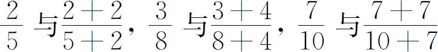
这三组分数的大小，会发现每组分数中，把一个分数的分子和分母同时加一个大于0的数，这个分数会变大。由此归纳结论：分数的分子和分母同时加上一个大于0的数，分数值一定变大。你认为这个结论对吗？
分析
根据题目给出的例子，发现每个分数都是真分数，再任意举一个真分数的例子验证，如
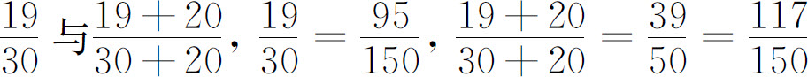
，可以推出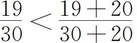
。说明这个结论对于真分数是成立的。那么再举一个假分数的例子，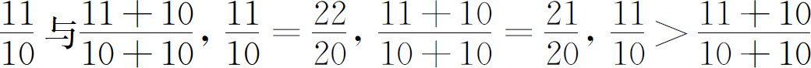
，与结论不符。所以这个结论是错误的。如果用符号a
，b
，c
表示，其中a
＞0，b
＞0，c
＞0，a
＞b
，有如下关系：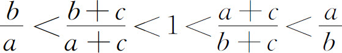
。当c
趋向于无穷大时，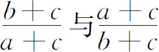
的极限都是1。
第二节 类比推理
一、对类比推理的认识
类比推理，是从特殊到特殊的推理方法，即依据两类事物的相似性，用一类事物的性质去推测另一类事物也具有该性质的推理方法，也叫类比法。依据该方法得到的结论可能为真也可能为假，需要进一步证明结论的可靠性。如根据整数的运算律，小数可以与整数进行类比，得出小数具有同样的运算性质。
类比不同于比较，类比是在比较的基础上进行的推理，而比较则是认识两类事物异同点的一种方法。类比法与归纳法也有不同之处，类比法是从特殊到特殊的推理，归纳法是从特殊到一般的推理。但它们也有相同之处，它们的结论都是或然的，即正确与否都是不确定的，有待证明。
二、类比推理的应用
类比法与归纳法一样，作为一般的合情推理方法，在日常生活中也有很多应用。如人们模仿鸟的飞行结构发明了飞机，模仿鱼在水里的游动发明了潜艇，模拟人脑的记忆和逻辑思维过程设计了人工智能。
类比法除了在日常生活中应用广泛外，在数学中也有大量应用，通过类比可以推出很多数学结论，经过证明如果是正确的，就可以成为数学知识的一部分。因此，类比法是发现数学新问题和获得新知识的重要方法。类比法在小学数学中的应用主要有以下几方面（见表3-4）。
表3-4
| 思想方法 |
知识点 |
应用举例 |
| 类比法 |
整数读写法 |
亿以内及亿以上的数的读写，与万以内数的读写相类比 |
| 整数的运算 |
四则运算的法则：多位数加减法与两位数加减法相类比，多位数乘多位数与多位数乘一位数相类比，除数是多位数的除法与除数是一位数的除法相类比 |
| 小数的运算 |
整数的运算法则、顺序和定律推广到小数 |
| 分数的运算 |
整数的运算顺序和运算定律推广到分数 |
| 除法、分数和比 |
除法商不变的规律、分数的基本性质和比的基本性质进行类比，包括有关问题解决方法的类比 |
| 周长的概念 |
长方形、正方形、一般四边形、三角形、平行四边形、梯形、多边形、圆等图形的周长、都可以通过类比来理解 |
| 周长公式 |
长方形、正方形、一般四边形、三角形、平行四边形、梯形、多边形、圆等图形的周长公式，都可以通过类比来推导 |
| 面积的概念 |
在各种图形中，后面的图形的面积可与前面的图形面积进行类比，如圆的面积可与长方形的面积进行类比 |
| 面积公式 |
与平行四边形面积公式的推导方法相类比，三角形，梯形面积公式的推导，也用转化的方法，把它们转化成平行四边形再推导面积公式。圆的面积公式推导也采取类似的方法，转化成长方形的面积计算来推导公式 |
| 长度、面积、体积 |
线、面、体之间的类比：线段有长短，用长度单位来计量；平面图形有大小，用面积单位来计量；立体图形占的空间有大小，用体积单位来计量 |
| 问题解决 |
数量关系相近的实际问题的类比，如百分数实际问题与分数实际问题的类比 |
| 鸡兔同笼 |
不同素材的鸡兔同笼问题的类比 |
| 抽屉原理 |
不同素材的抽屉原理问题的类比 |
三、类比推理的教学
无论是学习新知识，还是利用已有知识解决新问题，如果能够把新知识和新问题与已有的相类似的知识进行类比，进而找到解决问题的方法，这样就实现了知识和方法的正迁移。因此，要引导学生在学习数学的过程中善于利用类比思想，提高解决问题的能力。有些类比比较直接，如由整数的运算定律迁移到小数、分数的运算定律，问题解决中数量关系相近的问题的类比等。而有些类比比较隐蔽，需要在分析的基础上才能实现。如抽屉原理，变式练习有很多，难度较大，解决此类问题的关键就是通过类比找到抽屉和物品的数量，然后运用模型思想和演绎推理思想解决问题。应用类比的思想方法，关键在于发现两类事物相似的性质，因此，观察、比较与联想是类比的基础。梁秋莲老师认为“教师要熟悉整个小学阶段数学知识的来龙去脉，才能处于运用教材培养学生思维能力的主动地位”。
(3)
心理学领域的很多学者对小学儿童类比推理能力的发展进行了实验研究，如王骧业等进行了8～12岁儿童类比推理的实验研究，对8～12岁五个年龄组的200名儿童进行了图形、数概念、语词的三项类推测试，每项满分均为10分。
(4)
测试成绩表明：8～9岁儿童图形类比推理能力发展得较早、较好，这与图形的直观性有较大关系；而比较抽象的数概念和语词的类比推理到10岁以后，有比较稳定的、明显的发展，到了11岁，三种推理的成绩趋于一致，并达到较高水平。说明11岁儿童抽象逻辑类推的思维形式无论是在数量和质量方面都开始占据主导地位。由此可见，在小学中高年级加强类比推理的教学是可行，也是必要的；与归纳推理类似，有效的教学方法能够促进类比推理能力的发展。
中学数学与小学数学可以类比的知识有很多，如果打好小学数学的知识基础和掌握类比思想，对于中学数学的学习会有较大益处。代数与算术、空间与平面的类比、高维与低维的类比、无限与有限、曲与直的类比等等，都是常用的类比形式。如在代数中，与整数的运算顺序和运算定律相类比，可以导出有理数和整式的运算顺序和运算定律；与分数的基本性质相类比，可以导出分式也具有类似的性质，并且可以推出它和分数一样能够进行化简和运算。
根据《标准（2011版）》关于“数学思考”分阶段的目标要求，以及不同年龄小学生类比推理能力的发展水平，在小学阶段的教学目标可参考表3-5。
表3-5
| 学段 |
类比推理能力教学目标 |
| 第二学段 |
1．在观察、实验、猜想等活动中能够进行分析、比较，找到事物的共性，发展类比推理能力。
2．知道通过类比推理得出的结论的或然性，培养验证或说理的意识，简单解释类比推理的过程和依据 |
小学数学类比推理的教学，可分成以下几个方面。
1．概念的类比
小学数学中很多概念因为学生理解起来有困难，而没有进行严格定义，采取了描述或者直接给出的方式，这种情况下可运用类比法，来初步认识概念。如圆的周长、面积等概念，教材没有给出定义，可以与以前学过的长方形、正方形等的周长和面积进行类比，使学生知道围成圆的一圈曲线的长就是周长，曲线内部区域的大小就是面积。同样可以达到不用定义而认识相关概念的目的。再如学生理解了反比例的概念，如何用关系式表达反比例关系，可以引导学生与正比例关系式
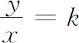
进行类比思考，从而得出关系式y
x
＝k
。
2．性质的类比
小学数学中有很多性质有相似之处或者在本质上是一致的，像商不变的性质、小数的性质、分数的性质、比的性质等有着密切的联系。如小数的性质，如果把一个小数化成分数的形式，实际上就转化成了分数性质的一部分，分数的性质、比的性质本质上与除法商不变的性质是一致的。再如，百分数的意义与分数的比的意义（无量纲性）是一致的。因此，运用类比法进行教学，能够起到事半功倍的效果，也就是老师们经常说的迁移类推。
3．法则的类比
小学数学中有些计算法则是在已有知识基础上扩展的，如小数与整数有密切的联系，它们都是采用十进制计数的，因此它们的四则运算的法则有诸多相似之处，可以进行类比。如小数乘法，除了注意两个因数小数点的位数、点准小数点外，其他法则与整数乘法是一样的。
4．定律的类比
学生在学习了整数的运算律后，在学习小数、分数的运算律时，既可以像整数那样，通过让学生计算几组试题，然后进行归纳，得出结论；也可以直接通过类比法得到，然后用几个例子进行验证。
5．代数与算术的类比
小学生学习用字母表示数及简单的一元一次方程，这必然涉及初步的代数式运算的法则和运算律，教材并没有在例题及正文中呈现这些知识，实际上就是运用了类比法，使得学生在解决问题的过程中能够运用这些法则和定律。
6．立体与平面的类比
学生在学习立体图形的有关知识时，可以把立体与平面进行类比，如体积与面积进行类比，面积是求一个平面图形所占的平面的大小，即含有多少个单位面积；体积是求一个立体图形所占的空间的大小，即含有多少个单位体积，本质上都是用单位1去度量。那么面积公式和体积公式的探索、推导的过程和方法是类似的。
7．曲与直的类比
就平面图形而言，有直线型的线段围成的图形，如长方形、三角形等，还有曲线型的图形，如圆、扇形、椭圆等。根据我国古代数学家刘徽的思想，方与圆，即曲与直是可以相互转化的。也就是说曲线型的图形，与直线型的图形在某些方面有相似的地方，可以进行类比。如现行小学数学教材在推导圆的面积公式时，利用的是割补转化的方法，把圆转化成长方形来计算面积，化圆为方。那么利用类比法，把圆心角是90°的扇形与三角形进行类比，把弧长看作底，半径看作高，利用三角形的面积公式计算面积。圆心角是90°的扇形的弧长是圆周长的四分之一，
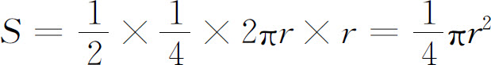
。所以圆的面积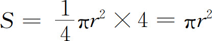
。如果把圆直接看成三角形，圆周长为底，半径为高，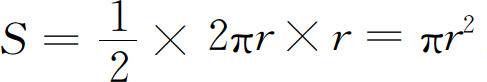
。
案例1
足球中超联赛胜一场得3分、平一场得1分、负一场得0分。某球队全年共计得了51分，比赛30场，其中负了7场。该球队胜和平各为多少场？
分析
该球队共比赛30场、其中负了7场，所以胜和平的总场次为30-7＝23。与鸡兔同笼问题类比，有着相似的条件和问题，这样就把问题转化为鸡兔同笼类的问题。假设23场比赛全为胜，那么就应该得23×3＝69分，实际上才得了51分，69-51＝18，18÷（3-1）＝9，得数9就是平的场次，23-9＝14。所以该球队战绩为14胜、9平、7负。
案例2
观察下面的式子，你能发现什么规律？
| （1） |
8＞4，8＋3＞4＋3；100＞98，100＋20＞98＋20；157＜268，157＋123＜268＋123； |
|
8＞4，8-3＞4-3；100＞98，100-20＞98-20；157＜268，157-123＜268-123。 |
| （2） |
9＞5，9×3＞5×3；25＞16，25×10＞16×10；128＜132，128×4＜132×4； |
|
9＞5，9÷3＞5÷3；25＞16，25÷10＞16÷10；128＜132，128÷4＜132÷4。 |
分析
上面这些式子有一个共同特点，就是都用“＞”或“＜”连接这些数，与25＋11＝5×5＋11这样的等式相类比，用“＞”或“＜”连接数的式子，可以称为“不等式”。我们在小学学习了等式的两条性质，不等式与等式类比，再根据上面不等式的一些例子的特点，可以归纳出不等式的两条类似的性质。
（1）不等式的两边同时加上或减去相同的数，不等号的方向不变。
（2）不等式的两边同时乘上或除以相同的正数，不等号的方向不变。
第三节 演绎推理
一、对演绎推理的认识
有两个前提（直言命题）和一个结论（直言命题）的演绎推理，叫做直言三段论，简称三段论。三段论是演绎推理的一般模式，包括：大前提——已知的一般原理，小前提——所研究的特殊情况，结论——根据一般原理，对特殊情况作出的判断。例如：4的倍数都是偶数，8的倍数都是4的倍数，所以8的倍数都是偶数。
三段论一般要借助于一个共同的词（项）把两个命题联系起来，然后推出一个新的命题（结论）。两个前提包含的共同项称为“中项”，上述例子中的“4的倍数”就是中项；大前提与结论包含的共同项就是大项，上述例子的“偶数”就是大项；小前提与结论包含的共同项就是小项，上述例子的“8的倍数”就是小项。我们用字母S
表示小项，M
表示中项，P
表示大项，一般的推理形式可概括如下：
所有M
都是P
；
S
是M
；
所以，S
是P
。
三段论的核心思想是：一类对象的全部具有或不具有某属性，那么该类对象的部分也具有或不具有某属性。第一种情况见上例，第二种情况见下例。
一切奇数都不是2的倍数，4的倍数加1的和是奇数，所以4的倍数加1的和不是2的倍数。
两种情况的推理可以用图3-2表示。
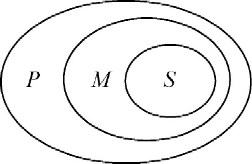
|
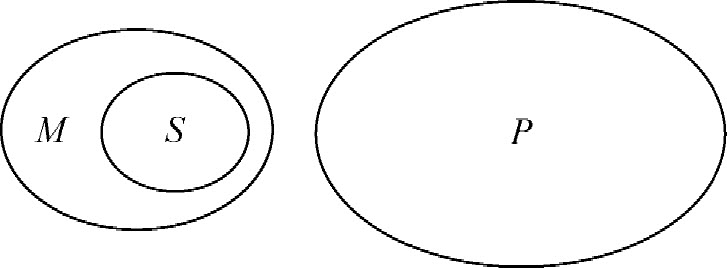
|
图3-2
在数学教材和教学中，如果两个前提中的某个不言自明，有时可以省略一个前提。如：这个图形是个三角形，它的内角和是180°。这个推理省略了大前提“三角形的内角和是180°”。再如：所有多边形都是由线段围成的，长方形也是由线段围成的。这个推理省略了小前提“长方形是多边形”。
选言推理，分为相容选言推理和不相容选言推理。这里只介绍不相容选言推理：大前提是一个不相容的选言判断，小前提肯定其中的一个选言支，结论则否定其他选言支；小前提否定除其中一个以外的选言支，结论则肯定剩下的那个选言支。例如：一个三角形，要么是锐角三角形，要么是直角三角形，要么是钝角三角形。这个三角形不是锐角三角形和直角三角形，所以，它是个钝角三角形。
假言推理，其分类较为复杂，这里只简单介绍一种充分条件假言推理：前提有一个充分条件假言判断，肯定前件就要肯定后件，否定后件就要否定前件。例如：如果一个数的末位是0，那么这个数能被5整除；203
的末位是0，所以203
能被5整除。这里的大前提是一个假言判断，不是直言判断，所以这种推理尽管与直言三段论有相似的地方，但它不是直言三段论。传统上也把假言推理称为假言三段论，现在称为假言推理。
关系推理，是前提中至少有一个是关系命题的推理。下面简单举例说明几种常用的关系推理：（1）对称性关系推理，如1米＝100厘米，所以100厘米＝1米；（2）反对称性关系推理，a
大于b
，所以b
不大于a
；（3）传递性关系推理，a
＞b
，b
＞c
，所以a
＞c
。关系推理在数学学习中应用比较普遍，如在一年级学习数的大小比较时，把一些数按从小到大或从大到小的顺序排列，实际上都用到了关系推理。
二、演绎推理思想的应用
演绎推理思想作为数学的一种重要的证明方法，在小学数学中虽然没有初中类似于数学证明等严密规范的演绎推理，但是在很多结论的推导过程中应用了演绎推理的省略形式。如推导出平行四边形的面积公式之后，三角形的面积公式的推导过程是先把两个同样的三角形拼成一个平行四边形，再根据平行四边形的面积公式推出三角形的面积公式。这个过程实际上应用了演绎推理，推理过程为：平行四边形的面积等于底乘高，两个同样的三角形的面积等于平行四边形的面积，所以两个同样的三角形的面积等于底乘高；因而一个三角形的面积就等于底乘高的积除以2。
小学数学演绎推理的应用见表3-6。
表3-6
| 思想方法 |
知识点 |
应用举例 |
| 完全归纳法 |
三角形 |
三角形内角和的推导 |
| 三段论 |
多边形 |
多边形内角和的推导 |
| 面积 |
正方形面积公式的推导 |
| 平行四边形面积公式的推导 |
| 三角形面积公式的推导 |
| 梯形面积公式的推导 |
| 圆面积公式的推导 |
| 体积 |
正方体体积公式的推导 |
| 角的相等 |
两条直线相交，对顶角相等 |
| 三角形外角与内角的关系 |
三角形的一个外角等于与它不相邻的两个内角的和 |
| 选言推理 |
|
类似于人教版二年级下册数学广角中的“推理” |
| 假言推理 |
|
根据概念、性质等进行判断的一些问题 |
| 关系推理 |
|
大小比较、恒等变形、等量代换等等 |
在小学数学中，还有很多可以挖掘的进行演绎推理教学的素材，如根据正比例关系和反比例关系图象进行数据的估计、利用数轴比较分数的大小、猜测圆锥的体积公式等都用到了演绎推理。在北京市东城区第八届“东兴杯”教学大赛活动中，一位老师执教的“真分数和假分数”一课，给学生出了一道拓展题（如图3-3所示）。
学生能够利用分数的意义、分数单位、真分数和假分数的大小关系等知识进行推理比较大小，而不必利用后面的通分知识比大小。如学生认为
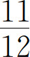
是真分数，比1小，而且接近1，所以是点B
而不是点A
；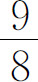
是假分数，比1大，而且接近1，所以是点C
；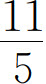
是假分数，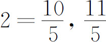
有11个 ，2有10个
，2有10个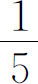
，所以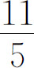
比2大，而且接近2，因此是点D
。
三、演绎推理的教学
就演绎推理和合情推理的关系及教学建议，《标准（2011版）》指出“推理贯穿于数学教学的始终，推理能力的形成和提高需要一个长期的、循序渐进的过程。义务教育阶段要注重学生思考的条理性，不要过分强调推理的形式……教师在教学过程中，应该设计适当的学习活动，引导学生通过观察、尝试、估算、归纳、类比、画图等活动发现一些规律，猜测某些结论，发展合情推理能力；通过实例使学生逐步意识到，结论的正确性需要演绎推理的确认，可以根据学生的年龄特征提出不同程度的要求”。
心理学领域的很多专家学者对小学儿童演绎推理能力的发展进行了实验研究。李丹等对小学儿童三段论式推理的特点进行了实验研究
(5)
，结果说明，儿童推理能力是在三至五年级之间（10～11岁）发生较大转变，能进行命题演绎的儿童从58％上升到80％。11岁以上就基本上具有命题推理（演绎推理）的能力，而9～10岁以下则常犯重复前提等错误，他们还不能同时考虑大前提和小前提之间的关系，从而找出新的联系，引出新的结论来。
由此可见，五年级（11岁左右）是儿童思维发展的关键年龄。朱智贤、林崇德曾经进行过儿童数概念与运算能力发展的对比实验，结果为：追踪班由于着重抓了思维的智力品质的训练，三年级就有86.7％的学生达到了小学数学运算思维的最高级水平。而一个控制班，由于教学不甚得法，到了五年级才有75％的被试达到这个水平。
实验结果表明：思维发展的关键年龄有一定的伸缩性，五年级（11岁左右）是应该达到相应水平的关键年龄，只要教学得法，可以提前到四年级甚至三年级。
演绎推理能力发展的四级水平如下：
（1）简单原理、法则直接具体化的运算（如按类型儿童演算应用题）。
（2）简单原理、法则直接以字母具体化的运算（如二年级儿童能用a
＋b
＋c
＝c
＋b
＋a
＝a
＋c
＋b
，……来表示交换律，并运用于习题中去）。
（3）算术原理、法则和公式作为大前提，要求合乎逻辑地进行多步演绎和具体化，正确得出结论，完成算术习题。
（4）以初等代数或几何原理为大前提，进行多步演绎推理，得出正确的结论，完成代数或几何习题。
到五年级（11岁左右）时演绎推理能力达到三级水平的百分比为76.7％，达到四级水平的百分比为56.7％。
小学儿童在运算能力的发展中，掌握归纳与演绎两种推理形式的趋势和水平是相近的。只有儿童的思维中归纳推理和演绎推理处于有机统一时，他们才真正掌握了抽象逻辑思维能力。
(6)
根据以上课程标准关于推理思想的理念和要求，以及小学儿童推理能力发展的研究成果，在小学数学教学中要注意把握以下几点。
第一，推理是重要的思想方法之一，是数学的基本思维方式，要贯穿于数学教学的始终。在小学数学中，除了运算是数学的基本操作方式外，推理也是常用的操作方式。无论是低年级的找规律、总结计算法则，还是高年级的面积、体积公式的推导，无不用到推理的思想方法。因而，广大教师要牢记推理思想从一年级起就要开始渗透和应用，是一个长期的培养过程；培养一年级的孩子有根据、有条理地思考问题，也是一种演绎推理思想的熏陶。
第二，合情推理和演绎推理二者不可偏废。合情推理多用于根据特殊的事实去发现和总结一般性的结论，演绎推理往往用于根据已有的一般性的结论去证明和推导新的结论。二者在数学中的作用都是很重要的。如小学数学常用的法则、性质、公式、定律等常常是经过归纳法得出结论，然后再利用这些结论进行计算，运用规定的规则计算，实际上就是演绎推理。
第三，推理能力的培养与四大内容领域的教学要有机地结合。推理能力的发展与各领域知识的学习是一个有机的结合过程，因而在教学过程中要给学生提供各个领域的丰富的、有挑战性的观察、实验、猜想、验证等活动，去发现结论，培养推理能力。
第四，把握好推理思想教学的层次性和差异性。推理能力的培养要结合具体知识的学习，同时要考虑学生的认知水平和接受能力。
根据《标准（2011版）》关于“数学思考”分阶段的目标要求，以及不同年龄小学生演绎推理能力的发展水平，在小学阶段的教学目标可参考表3-7。
表3-7
| 学段 |
演绎推理能力教学目标 |
| 第一学段 |
1．根据法则进行计算、根据四则运算的意义解决简单的问题。
2．结合数的相等关系、不等关系的传递性，体会关系推理思想。
3．结合简单的“数独”，体会选言推理思想。
4．逐步学会有根据、有条理地思考问题 |
| 第二学段 |
1．在几何图形的面积、体积公式推导的过程中，把归纳法和演绎推理结合起来，得出结论。
2．根据法则、公式、定律、性质等进行计算、解决问题。
3．能有条理、有根据地进行思考，能比较清楚地表达自己的思考过程与结果。
4．培养说理的意识，学会简单的三段论推理 |
在人们的传统观念中，小学几何是实验几何，很难进行演绎推理证明的教学。同时，在初中阶段，培养学生的演绎推理能力是重要的教学目标之一；然而对于部分初中学生而言，这部分知识又是学习中的难点。心理学研究表明：在小学高年级能进行演绎推理思想的渗透和教学，从而使刚升入初中的学生有演绎推理的初步经验。根据《标准（2011版）》修订的义务教育教科书数学六年级下册总复习的数学思考小节部分，编排了演绎推理证明的例题和习题，这是小学数学教材编写史上的第一次探索。需要教师在教学实践中探索并总结经验，摸索出在小学数学教学中进行演绎推理证明的可行模式；当然，不必去追求证明的格式体例等形式上的东西，主要是引导学生学会有根据、有条理地思考。
案例1
规定两种新运算“◎”和“○”，◎表示两数之中取大数的运算，○表示两数之中取小数的运算。如3◎5＝5，7.8○10＝7.8。
9○12＋28.6◎4＝_____。
分析
根据题目定义的新运算法则，9○12＝9，28.6◎4＝28.6，9＋28.6＝37.6。
案例2
规定一种新运算“※”，a
※b
＝a
2
-b
2
。则9※（4※3）＝_____。
分析
根据题目定义的新运算法则，4※3＝42
-32
＝7，9※7＝92
-72
＝32。
案例3
如图3-4，一个平行四边形ABCD
和一个等腰三角形DCE
（DC
和DE
为腰）拼成了一个梯形。请说明这个梯形是等腰梯形。
分析
根据题目给定的条件，已经知道四边形ABED
是梯形，那么根据等腰梯形的定义，只需要证明两个腰AB
和DE
相等，就能证明梯形ABED
是等腰梯形。下面给出证明：
因为四边形ABCD
是平行四边形，所以有AB
＝DC
，又因为三角形DCE
是等腰三角形且DC
和DE
为腰，所以有DC
＝DE
。
可得AB
＝DE
。
所以梯形ABED
是等腰梯形。
实际上述证明过程并没有完全按照演绎推理的完整过程进行，而是有所简化，省略了大前提，因为数学并不等于逻辑，没有必要过分追求形式化的东西。
案例4
在计数制中，我们通常使用的是十进制，即逢十进一。而计数制方法可以有很多，如二进制是计算机处理数据的计数方法。十进制的计数符号是0到9这10个数字，逢10进1，计数单位有个、十、百、千……如123，表示有1个百、2个十、3个一。而二进制的计数符号是0和1，逢2进1，从低位到高位，各数位上的数字是几（实际上就是0或1），就表示几个1、2、4、8、16……如二进制的10就表示1个2、0个1，2＋0＝2，表示十进制的2；二进制的11就表示1个2、1个1，2＋1＝3，表示十进制的3。二进制与十进制各数的比较如表3-8所示。
（1）你能把十进制的4、5、6换算成二进制的数，填入上表吗？
（2）观察上表，你能发现什么规律？
分析
二进制的第3位就表示4，第1、2位用0占位就可以了，所以4用二进制表示为100。5＝4＋1，第1位写1，第2位用0占位就可以了，所以5用二进制表示为101。6＝4＋2，第2位写1，第1位用0占位就可以了，所以6用二进制表示为110，如表3-9所示。
通过观察发现，十进制的奇数换算成二进制数时，第一位上都是1；十进制的偶数换算成二进制数时，第一位上都是0。
第四节 转化思想
一、对转化思想的认识
人们在面对数学问题，如果直接应用已有知识不能或不易解决该问题时，往往会将需要解决的问题不断转化形式，把它归结为能够解决或比较容易解决的问题，最终使原问题得到解决。这种思想方法称为转化（化归）思想。
从小学到中学，数学知识呈现一个由易到难、从简到繁的过程；然而，人们在学习数学、理解和掌握数学的过程中，却经常通过把陌生的知识转化为熟悉的知识、把繁难的知识转化为简单的知识，从而逐步学会解决各种复杂的数学问题。因此，转化既是一般化的数学思想方法，具有普遍的意义；同时，转化思想也是攻克各种复杂问题的法宝之一，具有重要的意义和作用。
二、转化所要遵循的原则
转化思想的实质就是在已有的简单的、具体的、基本的知识的基础上，把未知化为已知、把复杂化为简单、把一般化为特殊、把抽象化为具体、把非常规化为常规，从而解决各种问题。因此，应用转化思想时要遵循以下几个基本原则：
（1）数学化原则，即把生活中的问题转化为数学问题，建立数学模型，从而应用数学知识找到解决问题的方法。数学来源于生活，应用于生活。学习数学的目的之一就是要利用数学知识解决生活中的各种问题，课程标准特别强调的目标之一就是培养实践能力。因此，数学化原则是一般化的普遍的原则之一。
（2）熟悉化原则，即把陌生的问题转化为熟悉的问题。人们学习数学的过程，就是一个不断面对新知识的过程；解决疑难问题的过程，也是一个面对陌生问题的过程。从某种程度上说，这种转化过程对学生来说既是一个探索的过程，又是一个创新的过程；与课程标准提倡培养学生的探索能力和创新精神是一致的。因此，学会把陌生的问题转化为熟悉的问题，是一个比较重要的原则。
（3）简单化原则，即把复杂的问题转化为简单的问题。对解决问题者而言，复杂的问题未必都不会解决，但解决的过程可能比较复杂。因此，把复杂的问题转化为简单的问题，寻求一些技巧和捷径，也不失为一种上策。
（4）直观化原则，即把抽象的问题转化为具体的问题。数学的特点之一便是它具有抽象性。有些抽象的问题，直接分析解决难度较大，需要把它转化为具体的问题，或者借助直观手段，比较容易分析解决。因而，直观化是中小学生经常应用的方法，也是重要的原则之一。
三、转化思想的应用
学生面对的各种数学问题，可以简单地分为两类：一类是直接运用已有知识便可顺利解答的问题；另一种是陌生的知识，或者不能直接运用已有知识解答的问题，需要综合地运用已有知识或创造性地解决的问题。如知道一个长方形的长和宽，求它的面积，只要知道长方形面积公式的人，都可以计算出来，这是第一类问题；如果不知道平行四边形的面积公式，通过割补平移变换把平行四边形转化为长方形，推导出它的面积公式，再计算面积，这是第二类问题。对于广大中小学生来说，他们在学习数学的过程中所遇到的很多问题都可以归为第二类问题，并且要不断地把第二类问题转化为第一类问题。解决问题的过程，从某种意义上来说就是不断地转化求解的过程，因此，转化思想应用非常广泛。
转化思想在小学数学中的应用如表3-10所示。
表3-10
| 知识领域 |
知识点 |
应用举例 |
| 数与代数 |
数的意义 |
整数的意义：用实物操作和直观图帮助理解 |
| 小数的意义：用直观图帮助理解 |
| 分数的意义：用直观图帮助理解 |
| 负数的意义：用数轴等直观图帮助理解 |
| 四则运算的意义 |
乘法的意义：若干个相同加数相加的一种简便算法 |
| 除法的意义：乘法的逆运算 |
| 四则运算的法则 |
整数加减法：用实物操作和直观图帮助理解算法 |
| 小数加减法：小数点对齐，然后按照整数的方法进行计算 |
| 小数乘法：先按照整数乘法的方法进行计算，再点小数点 |
| 小数除法：把除数转化为整数，基本按照整数除法的方法进行计算，需要注意被除数小数点与商的小数点对齐 |
| 分数加减法：异分母分数加减法转化为同分母分数加减法 |
| 分数除法：转化为分数乘法 |
| 四则运算各部分间的关系 |
a
＋b
＝c
，c
-a
＝b
ab
＝c
，a
＝c
÷b
|
| 简便计算 |
利用运算定律进行简便计算 |
| 方程 |
解方程：解方程的过程，实际就是不断把方程转化为未知数前边的系数是1的过程（x
＝a
） |
| 解决问题的策略 |
化繁为简：植树问题、鸡兔同笼问题等 |
| 化抽象为直观：用线段图、图表、图象等直观表示数量之间的关系、帮助推理 |
| 化实际问题为数学问题 |
| 化一般问题为特殊问题 |
| 化未知问题为已知问题 |
| 图形与几何 |
三角形内角和 |
通过操作把三个内角转化为平角 |
| 多边形的内角和 |
转化为三角形求内角和 |
| 面积公式 |
正方形的面积：转化为长方形求面积 |
| 平行四边形面积：转化为长方形求面积 |
| 三角形的面积：转化为平行四边形求面积 |
| 梯形的面积：转化为平行四边形求面积 |
| 圆的面积：转化为长方形求面积 |
| 组合图形的面积：转化为求基本图形的面积 |
| 体积公式 |
正方体的体积：转化为长方体求体积 |
| 圆柱的体积：转化为长方体求体积 |
| 圆锥的体积：转化为圆柱求体积 |
| 统计与概率 |
统计图和统计表 |
运用不同的统计图表描述各种数据 |
| 可能性 |
运用不同的方式表示可能性的大小 |
四、转化思想的教学
1．化抽象问题为直观问题
数学的特点之一是它具有很强的抽象性，这是每个想学好数学的人必须面对的问题。从小学到初中，再到高中，数学问题的抽象性不断加强，学生的抽象思维能力在不断接受挑战。如果能把比较抽象的问题转化为操作或直观的问题，那么不但使得问题容易解决，经过不断的抽象→直观→抽象的训练，学生的抽象思维能力也会逐步提高。下面举例说明。
案例
有2件不同的上衣、3条不同的裤子、2双不同的鞋，一共有多少种穿法？
分析
此题如果用分类法、穷举法，会比较麻烦；假如用直观的树状图来解决，把抽象的问题直观化，会更容易解决。分别用A
、B
表示上衣，C
、D
、E
表示裤子，H
、I
表示鞋，如图3-5所示。
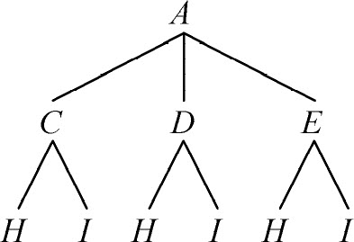
|
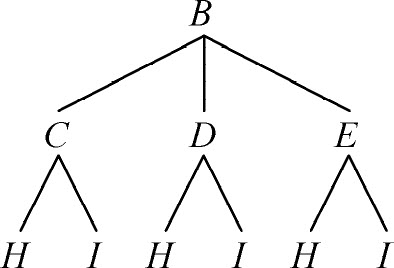
|
图3-5
从上到下数连线的条数，共有12种穿法。
即使再增加难度，此法也比较有效。
2．化繁为简的策略
有些数学问题比较复杂，直接解答过程会比较繁琐，如果在结构和数量关系相似的情况下，从更加简单的问题入手，找到解决问题的方法或建立模型，并进行适当检验，如果能够证明这种方法或模型是正确的，那么该问题一般来说便得到解决。下面举例加以说明。
案例1
把186拆分成两个自然数的和，怎样拆分才能使拆分后的两个自然数的乘积最大？187呢？
分析
此题中的数比较大，如果用枚举法一个一个地猜测验证，比较繁琐。如果从比较小的数开始枚举，利用不完全归纳法，看看能否找到解决方法。如从10开始，10可以分成：1和9，2和8，3和7，4和6，5和5。它们的积分别是：9，16，21，24，25。可以初步认为拆分成相等的两个数的乘积最大，如果不确定，还可以再举一个例子，如12可以分成：1和11，2和10，3和9，4和8，5和7，6和6，它们的积分别是：11，20，27，32，35，36。由此可以推断：把186拆分成93和93，93和93的乘积最大，乘积为8649。适当地加以检验，如92和94的乘积为8648，90和96的乘积为8640，都比8649小。
因为187是奇数，无法拆分成相等的两个数，只能拆分成相差1的两个数，这时它们的乘积最大。不再举例验证。
案例2
你能快速口算85×85＝，95×95＝，105×105＝吗？
分析
仔细观察可以看出，此类题有些共同特点，每个算式中的两个因数相等，并且个位数都是5。如果不知道个位数是5的相等的两个数的乘积的规律，直接快速口算是有难度的。那么，解此类题有什么技巧呢？不妨从简单的数开始探索，如15×15＝225，25×25＝625，35×35＝1225。通过观察这几个算式的因数与相应的积的特点，可以初步发现规律是：个位数是5的相等的两个数的乘积分为左右两部分：左边为因数中5以外的数字乘比它大1的数，右边为25（5乘5的积）。所以85×85＝7225，95×95＝9025，105×105＝11025，实际验证也是如此。
很多学生面对一些数学问题，可能知道怎么解答，但是只要想起解答过程非常繁琐，就会产生退缩情绪，或者在繁琐的解答过程中出现失误，这是比较普遍的情况。因此，学会化繁为简的解题策略，对于提高解决繁难问题的能力大有帮助。
3．化实际问题为特殊的数学问题
数学来源于生活，应用于生活。与小学数学有关的生活中的实际问题，多数可以用常规的小学数学知识解决；但有些生活中的实际问题表面上看是一些常用的数量，似乎能用常规的数学模型解决问题，真正深入分析数量关系时，可能由于条件不全面而无法建立模型。这时，就需要超越常规的思维模式，从另外的角度进行分析，找到解决问题的方法。下面举例说明。
案例1
某旅行团队翻越一座山。上午9时上山，每小时行3千米，到达山顶时休息1小时。下山时，每小时行4千米，下午4时到达山底。全程共行了20千米。上山和下山的路程各是多少千米？
分析
此题知道上山和下山的速度，上山和下山的时间总和，上山和下山的路程总和，可用方程解决，还可以用假设法。仔细观察可以发现：题中给出了两个未知数量的总和以及与这两个数量有关的一些特定的数量，如果用假设法，那么就类似于鸡兔同笼问题。假设都是上山，那么总路程是18（6×3）千米，比实际路程少算了2千米，所以下山时间是2［2÷（4-3）］小时，上山时间是4小时。上山和下山的路程分别是12千米和8千米。
案例2
李阿姨买了2千克苹果和3千克香蕉用了11元，王阿姨买了同样价格的1千克苹果和2千克香蕉，用了6.5元。每千克苹果和香蕉各多少钱？
分析
此题初看是关于单价、总价和数量的问题，但是，由于题中没有告诉苹果和香蕉各自的总价是多少，无法直接计算各自的单价。认真观察，可以发现：题中分两次给出了不同数量的苹果和香蕉的总价，虽然题中有苹果和香蕉各自的单价这两个未知数，但这二者没有直接的关系，如果用方程解决，也超出了一元一次方程的范围。那么这样的问题在小学数学的知识范围内如何解决呢？利用二元一次方程组加减消元的思想，可以解决这类问题；具体来说就是把两组数量中的一个数量化成相等的关系，再相减，得到一个一元一次方程。不必列式推导，直接分析便可：1千克苹果和2千克香蕉6.5元，那么可得出2千克苹果和4千克香蕉13元；题中已知2千克苹果和3千克香蕉11元。用13减去11得2，所以香蕉的单价是每千克2元。再通过计算得苹果的单价是每千克2.5元。
4．化未知问题为已知问题
对于学生而言，学习的过程是一个不断面对新知识的过程，有些新知识通过某些载体直接呈现，如面积和面积单位，通过一些物体或图形直接引入概念；而有些新知识可以利用已有知识通过探索，把新知识转化为旧知识进行学习。如平行四边形面积公式的学习，通过割补平移，把平行四边形转化为长方形求面积。这种化未知为已知的策略，在数学学习中非常常见。下面举例说明。
案例
水果商店昨天销售的苹果比香蕉的2倍多30千克，这两种水果一共销售了180千克。销售香蕉多少千克？
分析
学生在学习列方程解决问题时学习了最基本的有关两个数量的一种模型：已知两个数量的倍数关系以及这两个数量的和或差，求这两个数量分别是多少。题中的苹果和香蕉的关系，不是简单的倍数关系；而是在倍数的基础上增加了一个条件，即苹果比香蕉的2倍还多30千克。假如把180减去30得150，那么题目可以转化为：如果水果商店昨天销售的苹果是香蕉的2倍，那么这两种水果一共销售了150千克。销售香蕉多少千克？这时就可以列方程解决了，设未知数时要注意设谁为x
，题目求的是哪个量。
这个案例能给我们什么启示呢？教师在教学中要让学生学习什么？学生既要学习知识，又要学习方法。学生不仅要学会类型套类型的解题模式，更重要的是在理解和掌握最基本的数学模型的基础上，形成迁移类推或举一反三的能力。教师在上面最基本的模型基础上，可以引导学生深入思考以下问题串：
（1）水果商店昨天销售的苹果比香蕉的2倍少30千克，这两种水果一共销售了180千克。销售苹果多少千克？
（2）水果商店昨天销售的香蕉比苹果的
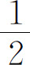
多30千克，这两种水果一共销售了180千克。销售苹果多少千克？
（3）水果商店昨天销售的香蕉比苹果的
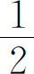
少30千克，这两种水果一共销售了120千克。销售苹果多少千克？
（4）水果商店昨天销售的苹果是香蕉的2倍，销售的梨是香蕉的3倍。这三种水果一共销售了180千克。销售香蕉多少千克？
（5）水果商店昨天销售的苹果是香蕉的2倍，销售的梨是苹果的2倍。这三种水果一共销售了210千克。销售香蕉多少千克？
从以上几个题目的步数来说，可能已经超越了教材基本的难度标准。但笔者近年来一直有一个理念：“高水平教学，标准化考试”。教师们可以深入思考并在课堂上大胆探索：这样的问题经过引导和启发，学生到底能否解决？学生是否能在数学思想方法和数学思维能力上得到更好的发展？是否贯彻了课程标准提倡的“人人获得良好的数学教育，不同的人在数学上得到不同的发展”的理念？
5．化一般问题为特殊问题
数学中的规律一般具有普遍性，但是对于小学生而言，普遍的规律往往比较抽象，较难理解和应用。如果举一些特殊的例子运用不完全归纳法加以猜测验证，也是可行的解决问题的策略。下面举例说明。
案例
任意一个大于4的自然数，拆成两个自然数之和，怎样拆分才能使这两个自然数的乘积最大？
分析
此问题如果运用一般的方法进行推理，可以设这个大于4的自然数为N
。如果N
为偶数，可设N
＝2K
（K
为任意大于2的自然数），那么N
＝K
＋K
＝（K
-1）＋（K
＋1）＝（K
-2）＋（K
＋2）＝…。
所以把这个偶数拆分成两个相等的数的和，它们的积最大。
如果N
为奇数，可设N
＝2K
＋1（K
为任意大于1的自然数）；那么N
＝K
＋（K
＋1）＝（K
-1）＋（K
＋2）＝（K
-2）＋（K
＋3）＝…。
所以把这个奇数拆分成两个相差1的数的和，它们的积最大。
仔细观察问题可以发现，题中的自然数只要大于4，便存在一种普遍的规律；因此，取几个具体的特殊的数，也应该存在这样的规律。这时就可以把一般问题转化为特殊问题，仅举几个有代表性的比较小的数（大于4）进行枚举归纳，如10，11等，就可以解决问题，具体案例见前文。
转化思想作为最重要的数学思想之一，在学习数学和解决数学问题的过程中无处不在，对于学生而言，要善于运用转化思想解决各种复杂的问题，最终达到在数学的世界里举重若轻的境界。
第五节 数形结合思想
一、对数形结合思想的认识
数形结合思想就是通过数和形之间的对应关系和相互转化来解决问题的思想方法。数学是研究现实世界的数量关系与空间形式的科学，数和形之间是既对立又统一的关系，在一定的条件下可以相互转化。这里的数是指数、代数式、方程、函数、数量关系式等，这里的形主要是指几何图形和函数图象等。在数学的发展史上，直角坐标系的出现给几何的研究带来了新的工具，直角坐标系与几何图形相结合，也就是把几何图形放在坐标平面上，使得几何图形上的每个点都可以用直角坐标系里的坐标（有序实数对）来表示，这样可以用代数的量化的运算的方法来研究图形的性质，堪称数形结合的完美体现。数形结合思想的核心应是代数与几何的对立统一和完美结合，就是要善于把握什么时候运用代数方法解决几何问题是最佳的、什么时候运用几何方法解决代数问题是最佳的。如解决不等式和函数问题有时用图象解决非常简洁，几何证明问题在初中是难点，到高中运用解析几何的代数方法有时就比较简便。
数形结合思想与几何直观既有联系又有区别，数形结合包含两个方面：以形助数和以数解形，而几何直观是指利用图形描述和分析问题，这里的问题不仅包括几何以外的问题，也包括几何问题本身，如利用图形的运动去认识和理解几何图形也是几何直观。
数形结合思想可以使抽象的数学问题直观化、使繁难的数学问题简洁化，使原本需要通过抽象思维解决的问题，有时借助形象思维就能够解决，有利于抽象思维和形象思维的协调发展和优化解决问题的方法。数学家华罗庚曾说过：“数缺形时少直觉，形少数时难入微。”这句话深刻地揭示了数形之间的辩证关系以及数形结合的重要性。众所周知，小学生的逻辑思维能力还比较弱，在学习数学时必须面对数学的抽象性这一现实问题；教材的编排和课堂教学都在千方百计地使抽象的数学问题转化成学生易于理解的方式呈现，借助数形结合思想中的图形直观手段，可以提供非常好的教学方法和解决方案。如从数的认识、计算到比较复杂的实际问题，经常要借助图形来理解和分析，也就是说，在小学数学中，数离不开形。另外，几何知识的学习，很多时候只凭直接观察看不出什么规律和特点，这时就需要用数来表示，如一个角是不是直角、两条边是否相等、周长和面积是多少等。换句话说，就是形也离不开数。因此，数形结合思想在小学数学中的意义重大。
二、数形结合思想的应用
数形结合思想在数学中的应用大致可分为两种情形：一是借助于数的精确性、程序性和可操作性来阐明形的某些属性，可称之为“以数解形”；二是借助形的几何直观性来阐明某些概念及数之间的关系，可称之为“以形助数”。数形结合思想在中学数学的应用主要体现在以下几个方面：（1）实数与数轴上的点的对应关系；（2）函数与图象的对应关系；（3）曲线与方程的对应关系；（4）与几何有关的知识，如三角函数、向量等；（5）概率统计的图形表示；（6）在数轴上表示不等式的解集；（7）数量关系式具有一定的几何意义，如s
＝100t
。
数形结合思想在小学数学的四大领域知识的学习中都有非常普遍和广泛的应用，主要体现在以下几个方面：一是利用“形”作为各种直观工具帮助学生理解和掌握知识、解决问题，如从低年级借助直线认识数的顺序，到高年级的画线段图帮助学生理解实际问题的数量关系。二是数轴及平面直角坐标系在小学的渗透，如数轴、位置、正反比例关系图象等，使学生体会代数与几何之间的联系。这方面的应用虽然比较浅显，但这正是数形结合思想的重点所在，是中学数学的重要基础。三是统计图本身和几何概念模型都是数形结合思想的体现，统计图表把抽象的枯燥的数据直观地表示出来，便于分析和决策。四是用代数（算术）方法解决几何问题。如角度、周长、面积和体积等的计算，通过计算三角形内角的度数，可以知道它是什么样的三角形等等。
三、数形结合思想的教学
数形结合思想的教学，应注意以下几个问题。
第一，如何正确理解数形结合思想。数形结合中的形是数学意义上的形，主要是几何图形和图象。刘加霞认为“借助于直观形象模型理解抽象的数学概念以及抽象的数量关系是小学生学习数学的重要方法，但这一方法与数学意义上的‘数形结合’方法的内涵不一致，它至多只能是‘数形结合’方法的雏形”。
(7)
如6＋1＝7，可以通过摆各种实物和几何图片帮助学生理解加法的算理，这里的几何图片并不是数形结合中的形，因为这里并不关心几何图片的形状和大小，并没有赋予图片本身形状和大小的量化的特征，甚至不用图片用小棒等材料也能起到相同的作用。如果结合数轴（低年级往往用类似于数轴的尺子或直线）来认识数的顺序和加法，那么就把数和形（数轴）建立了一一对应的关系，便于比较数的大小和进行加减法计算。笔者赞同刘老师的观点，用数轴、线段图、正方形、圆、图象等帮助学生理解数、数量关系，包括函数关系，这才是真正的以形助数，有利于教师把握数形结合思想的本质。
当然，如果教师能够把握数形结合思想的本质，再从广义角度理解这一思想，也未尝不可，那么借助实物和图形理解数、运算、数量关系，也可以理解为原始的数形结合。
分析
此题很难用小学算术的知识直接计算，因为它有无穷多个数相加，如果是有限个数相加，用等式的性质进行恒等变换可以计算。从题中数的特点来看，每一项的分子都是1，每一项的分母都是它前一项分母的2倍，或者说第几项的分母就是2的几次方，第n
项就是2的n
次方。联想到分数的计算可用几何直观图表示，那么现在可构造一个长度或者面积是1的线段或者正方形，不妨构造一个面积是1的正方形，如左图3-6所示。先取它的一半作为二分之一，再取余下一半的一半作为四分之一，如此取下去……当取的次数非常大时，余下部分的面积已经非常小了，用极限的思想来看，当取的次数趋向于无穷大时，余下部分的面积趋向于0，因而，最后取的面积就是1。也就是说，上面算式的得数是1。
第二，适当拓展数形结合思想的应用。数形结合思想中的以数解形在中学应用得较多，小学数学中常见的就是计算图形的周长、面积和体积等内容。除此之外，还可以创新求变，在小学几何的范围内深入挖掘素材，在学生已有知识的基础上适当拓展，丰富小学数学的数形结合思想。
案例2
用两个一样的直角三角形和一个等腰直角三角形（腰等于前两个直角三角形的斜边），可以拼一个直角梯形，如图3-7。根据梯形的面积等于3个三角形的面积之和，比较每个直角三角形的两条直角边的平方的和，与斜边的平方之间的大小关系，你能发现什么？
分析
当直角三角形的边长分别是a
、b
、c
时，也就是说直角三角形的三条边长可以取任意不同的值的时候，仍然有梯形的面积等于3个三角形的面积之和。
3个三角形的面积和是：a
×b
÷2×2＋c
2
÷2＝（2ab
＋c
2
）÷2。
梯形的面积是：（a
＋b
）×（a
＋b
）÷2＝［a
（a
＋b
）＋b
（a
＋b
）］÷2＝（a
2
＋b
2
＋2ab
）÷2。
所以有（a
2
＋b
2
＋2ab
）÷2＝（2ab
＋c
2
）÷2，可得a
2
＋b
2
＝c
2
。
根据以上计算结果，由此得出一个重大发现：直角三角形两条直角边的平方的和等于斜边的平方。实际上这是美国第20任总统加菲尔德发现的证明勾股定理的方法。
这里有一个难点就是（a
＋b
）×（a
＋b
）的计算，这是中学的多项式乘法。在小学学习乘法分配律时已经会计算a
（b
＋c
）＝ac
＋bc
，那么计算（a
＋b
）×（a
＋b
）可以先把左边的（a
＋b
）看作一个数，分别与右边括号中的a
和b
相乘，再进行计算。
（a
＋b
）×（a
＋b
）＝（a
＋b
）a
＋（a
＋b
）b
＝a
2
＋ba
＋ab
＋b
2
＝a
2
＋b
2
＋2ab
。
第六节 几何变换思想
一、对几何变换思想的认识
变换是数学中一个带有普遍性的概念，代数中有数与式的恒等变换、几何中有图形的变换。在初等几何中，图形变换是一种重要的思想方法，它以运动变化的观点来处理孤立静止的几何问题，往往在解决问题的过程中能够收到意想不到的效果。
初等几何变换是关于平面图形在同一个平面内的变换，在中小学教材中出现的相似变换、合同变换等都属于初等几何变换。合同变换实际上就是相似比为1的相似变换，是特殊的相似变换。合同变换也叫保距变换，分为平移、旋转和反射（轴对称）变换等。
1．平移变换
将平面上任一点P
变换到P
′，使得：（1）射线PP
′的方向一定；（2）线段PP
′的长度一定，则称这种变换为平移变换。也就是说一个图形与经过平移变换后的图形上的任意一对对应点的连线相互平行且相等，而且这些有向线段的方向都相同，射线PP
′的方向就是平移的方向，线段PP
′的长度就是平移的距离。
平移变换有以下一些性质：
（1）图形变为与之全等的图形。
（2）在平移变换下两点之间的方向保持不变。如任意两点A
和B
，变换后的对应点为A
′和B
′，则有AB
//A
′B
′，AA
′//BB
′。即AB
与A
′B
′，AA
′与BB
′的方向相同。
（3）在平移变换下两点之间的距离保持不变。如任意两点A
和B
，变换后的对应点为A
′和B
′，则有AB
＝A
′B
′，AA
′＝BB
′。
通俗地说，一个图形经过一次平移变换，就是把一个图形变换成了一个新的图形，这两个图形完全相同，而且还满足两个图形上的对应点的所有连线平行且相等，并且这些线段的方向是一致的，ABB
′A
′是平行四边形。也就是说，图形的平移运动并不关注中间运动的路线是水平的、竖直的、还是弯曲的，只关注图形最后的结果。如图3-8摩天轮中的座舱的运动，画成平面图形的运动就是平移，而不是旋转。
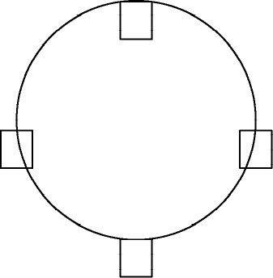
|
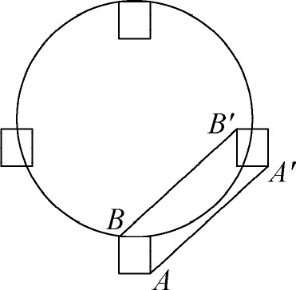
|
图3-8
上述变换中，原图形中的任意一点P
，在变换后的图形中的对应点为P
′，满足PP
′＝AA
′＝BB
′，PP
′//AA
′//BB
′。
在解初等几何问题时，常利用平移变换使分散的条件集中在一起，具有更紧凑的位置关系或变换成更简单的基本图形。
2．旋转变换
在同一平面内，使原点O
变换到它自身，其他任何点X
变换到X
′，使得：（1）OX
′＝OX
；（2）∠XOX
′＝θ
（定角），则称这样的变换为旋转变换。O
称为旋转中心，定角θ
为旋转角。当θ
＞0时，为逆时针方向旋转；当θ
＜0时，为顺时针方向旋转。当θ
等于平角时，旋转变换就是中心对称。通俗地说就是一个图形围绕一个定点在不变形的情况下转动一个角度的运动，就是旋转。在旋转变换下，图形的方位可能有变化。
旋转变换有以下一些性质：
（1）把图形变为与之全等的图形。
（2）在旋转变换下，任意两点A
和B
，变换后的对应点为A
′和B
′，则有直线AB
和直线A
′B
′所成的角等于θ
。
（3）在旋转变换下，任意两点A
和B
，变换后的对应点为A
′和B
′，则有AB
＝A
′B
′。
在解决几何问题时，旋转的作用是使原有图形的性质得以保持，但通过改变其位置，组合成新的图形，便于计算和证明。
3．反射变换
在同一平面内，若存在一条定直线L
，使对于平面上的任一点P
及其对应点P
′，其连线PP
′的中垂线都是L
，则称这种变换为反射变换，也就是常说的轴对称，定直线L
称为对称轴，也叫反射轴。
轴对称有如下性质：
（1）把图形变为与之全等的图形。
（2）在反射变换下，任意两点A
和B
，变换后的对应点为A
′和B
′，则有直线AB
和直线A
′B
′所成的角的平分线为L
。
（3）两点之间的距离保持不变，任意两点A
和B
，变换后的对应点为A
′和B
′，则有AB
＝A
′B
′。
如果一个图形沿一条直线折叠，直线两旁的部分能够互相重合，这个图形就叫做轴对称图形，如图3-9所示。
把一个图形沿某一条直线折叠，如果它能够与另一图形重合，那么就说这两个图形关于这条直线对称，如图3-10所示。
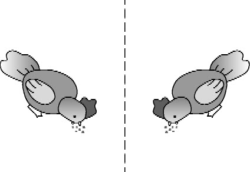
|
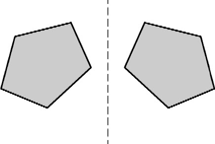
|
图3-10
轴对称变换和轴对称图形是两个不同的概念，前者是指图形之间的关系或折叠运动，后者是指一个图形。中小学数学中的很多图形都是轴对称图形，利用这些图形的轴对称性质，可以帮助我们解决一些计算和证明的几何问题。
综上所述，平移、旋转和轴对称都属于保距变换，都能使变换前后的图形的大小、形状不变，保持全等。另外，轴对称在适当的条件下可以转化为平移和旋转。把一个图形连续进行两次轴对称变换，如果两个对称轴平行，那么就转化为平移，平移方向垂直于对称轴，平移距离等于两条对称轴之间距离的2倍，如图3-11所示。把一个图形连续进行两次轴对称变换，如果两个对称轴相交，那么就转化为旋转，旋转中心是两轴交点，旋转角为两轴交角的2倍，如图3-12所示。
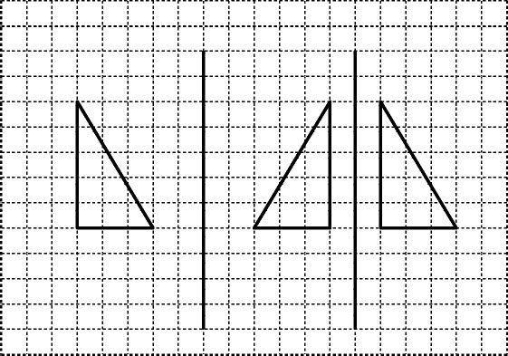
|
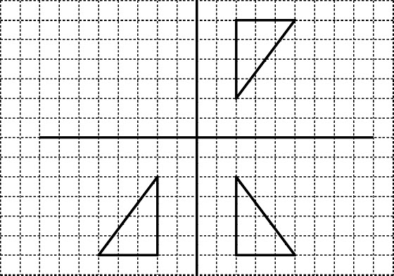
|
|
图3-11
|
图3-12
|
4．相似变换
在同一平面内，图形中的任意两点A
、B
，变换后的对应点为A
′、B
′，也就是任一线段AB
变换成A
′B
′，总有A
′B
′＝K
•AB
（K
＞0，且为常数），则称为相似变换。通俗地说就是一个图形按照一定比例放大或缩小，图形的形状不变。其中的K
称为相似比或相似系数，当K
＝1时，即为合同变换。相似变换有以下一些性质：
（1）两个图形的周长的比等于相似比。
（2）两个图形的面积的比等于相似比的平方。
（3）两条直线的夹角保持不变。
生活中的许多现象都渗透着相似变换的思想，如物体和图形在光线下的投影、照片和图片的放大或缩小、零件的图纸等等，因而利用相似变换可以解决生活中的一些几何问题。
近年来几何的教学已经由传统的注重图形的性质，周长、面积和体积等的计算、演绎推理能力转变为培养空间观念、几何直观，注重推理能力及观察、操作、实验并重的全面的、和谐的发展。其中推理不仅仅重视演绎推理，还特别强调合情推理。也就是说，新课程的理念在几何的育人功能方面注重空间观念、几何直观、创新精神、探索能力、推理能力、几何模型等全面、和谐的发展。而图形变换作为几何领域的重要内容和思想方法之一，在几何的育人功能方面发挥着非常重要的作用。图形变换来源于生活中物体的平移、旋转和轴对称的这些运动现象，因而了解图形的变换，有利于我们认识生活中丰富多彩的生活空间和形成初步的空间观念。利用图形变换设计美丽的图案，有利于感受、发现和创造生活的美，有利于认识图形之间的关系和发展空间观念。利用图形变换把静止的几何问题通过运动变换，找到更加简洁的解决问题的方法。
二、几何变换思想的应用
图形变换作为图形与几何领域的重要内容之一，在图形的性质的认识、面积公式的推导、面积的计算、图形的设计和欣赏、几何的推理证明等方面都有重要的应用。
小学数学中几何变换思想的应用如表3-11所示。
表3-11
| 思想方法 |
知识点 |
应用举例 |
| 轴对称 |
画简单的轴对称图形 |
认识轴对称图形，画出一个简单图形的轴对称图形 |
| 平移变换 |
认识平移，把简单图形平移 |
判断生活中物体的运动哪些是平移现象
画出一个简单图形沿水平方向、竖直方向平移后的图形 |
| 旋转变换 |
感知旋转现象 |
判断生活中物体的运动哪些是旋转现象 |
| 把简单图形旋转90° |
画出一个简单图形顺时针或逆时针旋转90°后的图形 |
| 合同变换 |
图形的性质、面积的计算 |
平行四边形、三角形、梯形和圆的面积公式的推导等都渗透了几何变换思想 |
| 图案的欣赏和设计 |
判断一些图案是由一些基本图形经过什么变换得到的；利用平移、旋转和轴对称等变换，设计美丽的图案 |
| 相似变换 |
把简单图形放大或缩小 |
画出长方形、正方形、三角形等简单的图形按照一定的比例放大或缩小后的图形 |
三、几何变换思想的教学
1．《标准（2011版）》关于图形变换的教学要求
《标准（2011版）》关于图形变换的内容和目标分为以下几个层次（表3-12）：
表3-12
| 学段 |
内容和目标 |
| 第一学段 |
结合实例，感受平移、旋转和轴对称现象 |
| 能辨认简单图形平移后的图形 |
| 通过观察、操作，初步认识轴对称图形 |
| 第二学段 |
通过观察、操作等活动，进一步认识轴对称图形及其对称轴，能在方格纸上画出轴对称图形的对称轴；能在方格纸上补全一个简单的轴对称图形 |
| 通过观察、操作等活动，在方格纸上认识图形的平移与旋转，能在方格纸上按水平或垂直方向将简单图形平移，会在方格纸上将简单图形旋转90° |
| 能利用方格纸按一定比例将简单图形放大或缩小 |
| 能从平移、旋转和轴对称的角度欣赏生活中的图案，并运用它们在方格纸上设计简单的图案 |
2．教学中需要注意的问题
几何变换这些内容虽然难度不大，但是对概念的准确性和教学要求比较难把握，给一些教师的备课和教学带来一定困惑。下面谈一谈如何把握相关的概念和教学要求。
第一，对一些概念的准确把握。
平移、旋转、轴对称变换与生活中物体的平移、旋转和轴对称现象不是一个概念。数学来源于生活，但不等于生活，是生活现象的抽象和概括。生活中的平移和旋转现象往往是物体的运动，如推拉窗、传送带、电梯、钟摆、旋转门等物体的运动，都可以称之为平移现象或旋转现象。而中小学中的几何变换都是指平面图形在同一个平面的变换，也就是说原图形和变换后的图形都是平面图形，而且都在同一个平面内。几何中的平移、旋转和轴对称变换来自生活中物体的平移现象、旋转现象和轴对称现象，如果把生活中这些物体画成平面图形，并且在同一平面上运动，就可以说成是几何中的平移、旋转和轴对称变换了。
一个变换是不是合同变换或相似变换，要依据概念进行判断。如平移，不必关注过程，只关注结果，即不必看运动的路线是直线还是曲线，只要满足平移的两个条件。如高山索道、滑雪、摩天轮座舱等都可以看成平移现象，画成平面图形就是平移变换。再如旋转，如旋转门、螺旋桨、钟表指针等的运动都可以看成旋转现象，但是要注意它的严密性：一是旋转中心必须固定，二是物体不能变形，三是旋转的角度可大可小，可以是1度，也可以是300度。这样的旋转运动画成平面图形在同一平面内的运动才是旋转变换。另外，几何意义上的变换都是从图形的对应点及其连线的几何性质进行描述的，与图形的颜色等无关。
曹培英老师在一篇文章中提到：“一次，在观摩‘平移与旋转’一课，当讨论到摩天轮的运动时，大家都认定它在旋转。始料不及的是，一个学生发言道：我坐过摩天轮，我坐在上面，始终是头朝上、脚朝下，所以我认为人坐在上面是平移，不是旋转。教师的应对方法是，小组讨论。结果可想而知：众说纷纭，莫衷一是。”“这一小学生提出的问题‘摩天轮在旋转，上面的座舱是在平移还是旋转’，不仅难倒了小学数学教师，也难倒了中学数学教师。”
(8)
由此可见，把握数学本质是应用数学思想并保证课堂教学质量的基础和关键。
第二，注意图形变换与其他几何知识的联系。
小学几何中的很多平面图形都是轴对称图形，如长方形、正方形、等腰三角形、等边三角形、等腰梯形、菱形、圆等。一方面要在学习轴对称时加强对这些图形的对称轴和轴对称的有关性质的认识；另一方面要在学习这些图形的概念和性质时进一步体会它们的轴对称特点。
在推导平行四边形、三角形和梯形的面积公式时，包括在计算组合图形的面积时，都用到了变换思想。如三角形面积公式的推导，是把任意两个完全相同的三角形拼成一个平行四边形，再利用三角形和平行四边形的关系，求出三角形的面积公式。这实际上是把任意一个三角形旋转180度，再沿着一条边平移，就组合成了一个平行四边形。也就是说，把任意一个三角形经过旋转和平移变换，就变换成了平行四边形。梯形面积公式的推导也是利用了这个原理。我国古代数学家刘徽利用出入相补原理求三角形和梯形的面积，实际上也用到了旋转变换。
第三，对教学要求和解题方法的准确把握。
《标准（2011版）》对图形变换的内容和教学要求有比较清晰的描述，尤其是要把握好两个学段的内容、教学要求和解题方法。
首先像直观判断题，例如，一个平面内有若干图形，要判断哪些图形经过平移可以互相重合，对于小学生来说很难用任何一对对应点的连线平行且相等来判断，只能通过直观感受判断，也就是说直观感受原图形在没有任何转动的情况下，通过水平、竖直或者沿斜线滑动能够与另一个图形重合，就是平移。同一平面内的任何两个图形，如果通过平移后能够重合，那么最多只需要通过两次水平或者竖直方向的平移就能够重合，借助方格纸可以帮助我们理解其中的道理。如在方格纸上原图形中的点A
（2，3），经过平移后它的对应点为A
′（8，10）。那么原图形可以通过先向右平移6格，再向上平移7格；或者先向上平移7格，再向右平移6格，得到平移后的图形。
其次像作图题，例如，画出一个图形沿着一个方向平移几格后的图形，应让学生明确，一个图形沿着一个方向平移几格，那么这个图形上的任何一个点和线段都沿着相同的方向平移几格。可重点掌握以下几个步骤：找出图形的关键的几个点；明确平移的方向和距离；画出平移后关键点的对应点；按照原图形的顺序连结各个点。再如，画出一个图形旋转90度后的图形，应让学生明确，一个图形绕一个点沿一个方向旋转多少度，除了图形上的旋转中心外，这个图形上的其他任何一个点和线段都围绕该点沿着相同的方向旋转相同的度数。可重点掌握以下几个步骤：确定旋转中心、旋转方向；找出图形的关键的几个点；画出旋转后关键点的对应点；按照原图形的顺序连结各个点。其中的难点是，图形的关键点与旋转中心的连线是斜线的时候如何旋转90度，可以先画能够确定旋转90度的线段，再根据原图形的形状特点来确定其他的关键点。
另外，在学习利用平行线画平行四边形之前，还可以利用平移在方格纸上画平行四边形，在方格纸上先任意画出顶点在方格交叉点上的相邻两条边，再根据平移的原理画出相对的两条边。
案例1
如图3-13所示，在直角三角形纸片中，∠C
是直角，D
是AC
的中点，E
是AB
的中点，把三角形沿DE
剪开，然后把两部分拼成不重叠的图形，那么不可能拼成下列选项中的（ ）。
A．平行四边形
B．直角梯形
C．长方形
D．等腰梯形
分析
根据已知条件，剪开后的两个图形分别是直角三角形AED
和直角梯形DEBC
，并且AD
＝CD
，AE
＝BE
，所以拼接的时候必须让相等的边重合拼在一起。分几种情况讨论：以D
点为中心，把三角形AED
沿逆时针旋转180°，得到平行四边形；以AC
为对称轴，把三角形AED
进行轴对称变换，再把变换后的图形向下平移，得到等腰梯形；以E
点为中心，把三角形AED
沿顺时针旋转180°，得到长方形；综合以上分析，不可能拼成直角梯形。
案例2
如图3-14所示，小明家的院子里有一块长30米、宽20米的长方形菜地，地里有两条相互垂直而且宽都是1米的小路。这块地实际种菜的面积是多少？
分析
此题对于小学生来说，并不是难题，可以有多种解法。这里可以应用平移原理，把小路向底边和右边平移。这时实际种菜的面积就转化为求长29米、宽19米的长方形的面积，用长乘宽就可求出面积。
案例3
如图3-15所示，三个同心圆的最大的圆的两条直径相互垂直，最大的圆的半径是2厘米，求阴影部分的面积。
分析
此题从表面上看，阴影部分比较分散，没有足够的数据计算每部分阴影的面积。根据两条直径相互垂直可以得出每个圆都被平均分成了4份，每一份旋转90度都可以与相邻的部分重合。因此，可以把最外圈阴影部分的四分之一大圆绕圆心顺时针旋转90度，把中间阴影部分的四分之一圆绕圆心逆时针旋转90度，使阴影经过旋转集中在右上角四分之一大圆里。阴影的面积为：
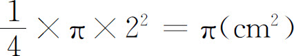
。
以上解题思路告诉我们，在计算一个图形尤其是组合图形的面积时，利用变换原理可以由原有的图形得到新的组合图形，转化为易于计算面积的图形，从而简化计算的步骤。
案例4
如图3-16所示，将正方形纸片ABCD
折叠，使边AB
、CB
均与对角线BD
重合，得到折痕BE
、BF
，则∠EBF
的大小为（ ）。
分析
根据轴对称变换的性质，轴对称图形的形状、大小完全相同，正方形的对角线把正方形分成两个一样的等腰直角三角形，底角是45°，即∠ABD
＝∠CBD
＝45°。沿着折痕BE
、BF
对折，又把每个45°角平均分成两份，∠EBF
＝∠EBD
＋∠FBD
＝45°。
第七节 极限思想
一、对极限思想的认识
我们知道，在小学数学里有些问题不是通过初等数学的方法解决的，如圆的面积，无法直接按照求长方形面积的方法来计算。我国古代数学家刘徽为了计算圆的面积和圆周率，曾经创立了“割圆术”，具体作法是：先作圆的内接正六边形，再作内接正十二边形……，随着边数的不断增加，正多边形越来越接近于圆，那么它的面积和周长也越来越接近于圆的面积和周长。刘徽在描述这种作法时说“割之弥细，所失弥少，割之又割，以至不可割，则与圆周合体而无所失矣”。也就是说，随着正多边形的边数无限增加，圆就转化为无限的圆内接正多边形，即化圆为方，这种思想就是极限思想，即用无限逼近的方式来研究数量的变化趋势的思想。为了便于理解，我们先从数列说起，数列是按照正整数1，2，3，…，n
，…编号依次排列的一列数，可写成如下形式：
a
1
，a
2
，a
3
，…，an
，…，
其中an
称为数列的通项。其实，数列的通项an
可以看成是自变量为正整数n
的特殊的函数，可写作an
＝f
（n
），其定义域为全体正整数。如
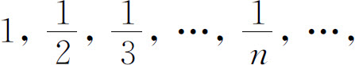
2，4，6，…，2n
，…，
1，-1，1，-1，1，-1，…
都是数列，当n
无限增大时，这些数列的通项都会随之变化，有的趋向于无穷大，如第二个数列；有的无限接近于某一常数，如第一个数列无限接近于0，这时我们就说该数列以0为极限，或者说收敛到0。通俗地说，就是对于任意给定一个不管多么小的正数ε，总是存在一个正整数N
，使得n
＞N
的通项a
n
（n
＝N
＋1及大于它的每一项a
n
，即a
N
＋1
，a
N
＋2
，a
N
＋3
，…）与常数a
的差的绝对值总小于ε（在数轴上可以直观地理解为两个点a
n
和a
的距离总小于ε），那么就说数列a
n
的极限为a
。
在上面的数列中，由无穷多个项相加的式子
a
1
＋a
2
＋a
3
＋…＋a
n
＋…，
叫做无穷级数，其中前n
项的和可记作Sn
＝a
1
＋a
2
＋a
3
＋…＋a
n
，称为级数的部分和，这些部分和又可以构成一个新的数列
S
1
，S
2
，S
3
，…，Sn
，…。
当n
趋向于无穷大时，如果数列S
n
的极限存在，可设极限为S
，这时极限S
就是无穷级数a
1
＋a
2
＋a
3
＋…＋a
n
＋…的和，记作
S
＝a
1
＋a
2
＋a
3
＋…＋a
n
＋…。
小学生的思维以形象思维为主，逐步向逻辑思维过渡；此外，在小学数学中还渗透着既对立又统一的辩证思维，如加与减、乘与除是学生非常熟悉的辩证关系。在极限思想中，也渗透着有限与无限、曲与直、变与不变的辩证关系。我们知道，多边形的面积直接用公式就可以计算出来，而如果其中有的边改成曲边，就无法直接用多边形的面积公式计算，就要用定积分来求了，如曲边梯形（直角梯形的斜边是曲边）的面积计算，就是先把曲边梯形平均分成n
个小曲边梯形，在每个小曲边梯形里取一个最大的小矩形，这时n
个小矩形的面积的和S
n
近似等于n
个小曲边梯形的面积的和，当n
越来越大时，小矩形的面积和就越来越接近于相应的曲边梯形的面积，当n
趋向于无穷大时，如果S
n
的极限存在，记作S
，最后S
就等于所有的小曲边梯形的面积的和了，那么就得到了曲边梯形的面积是S
。这是从有限的曲边梯形的面积中找到无限个小矩形的面积，再从无限个小矩形的面积的无限变化中回归到曲边梯形的有限的面积的过程，体现了有限与无限、曲与直相互转化的辩证思想。因此，极限思想对于培养学生初步的辩证思维有所裨益。
另外，极限的概念、无穷级数的和的概念有助于教师全面理解小数的概念。我们知道，在小学数学教材中小数是以分母是10的若干次幂的分数的形式来描述的，这种引入方式使得教师认为小数就是十进分数，是特殊的分数及分数的一部分。但从实数理论的角度来看，这种理解是片面的。教材对小数的处理是限于学生的知识水平和认知水平，只能先认识小数的一部分，即有限小数，并不能完整地理解小数的意义。而把小数看成十进分数，实际上只是有限小数，即分数中的分母不含有2和5以外的质因数。无限小数就无法直接看成十进分数，如
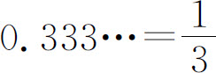
，无法直接用十进分数表示。如果想用十进分数表示，就必须用无限个十进分数的和的形式表示，
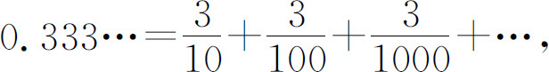
即无穷级数的和来表示。
二、极限思想的应用
极限思想在小学数学中的应用和渗透，主要体现在以下几点。
1．在数的计算中体会极限思想
小学数学学习的数的计算一般都是经过有限的几步计算就可以解决的问题，另外，作为知识的拓展，可适当介绍一些无限多个数相加的问题，如在数形结合思想中曾经介绍了无穷多个分数相加的问题，本文不再赘述。我国古代思想家庄子曾说过“一尺之棰，日取其半，万世不竭”，这句话用数学语言描述为“长度为单位1的线段，第一天取走全长的一半，以后每天取走剩下的一半，永远有剩余”，用无穷等比递缩数列的和来表示取走的长度，就是数形结合思想中的案例。另外，循环小数化分数的问题，也可以利用极限思想和数形结合思想来计算。
2．在圆的面积、圆柱的体积的计算中渗透极限思想
如上所述，在小学数学中，圆的面积不能像求长方形的面积那样直接利用公式计算、圆柱的体积不能像长方体那样直接利用公式计算，利用极限思想可以解决这些问题。如圆的面积的计算，先把圆平均分成若干等份，拼成近似的长方形，但它还不是长方形，仍然无法直接按照求长方形面积的方法来求；因为把一个圆不论进行怎样细小的有限次的分割拼补，都无法真正拼成一个长方形；这时只有借助极限思想，把圆分割得越细小，所拼成的图形就越接近于长方形，可以这样无限地分下去，拼成的图形面积就越趋向于长方形的面积，最后通过取极限来得到它的面积。也就是说，极限思想是这样操作的理论基础和计算精确性的保证，也是极限思想在小学数学中最完美的体现。
三、极限思想的教学
极限的概念是抽象的、辩证的，在教学中应注意下面的问题。
对有关极限的一些概念、教学要求和解题方法应准确把握。极限思想是用无限逼近的方式来研究数量的变化趋势的思想，这里要抓住两个关键语句：一个是变化的量是无穷多个，另一个是无限变化的量趋向于一个确定的常数，二者缺一不可。如自然数列是无限的，但是它趋向于无穷大，不趋向于一个确定的常数，因而自然数列没有极限。在教学中一方面要让学生体会无限，更重要的是通过具体案例让学生体会无限变化的量趋向于一个确定的常数。极限以及在此基础上定义的导数、定积分是解决用函数表达的现实问题的有力工具。有限与无限是辩证思维的一种体现，要辩证地看待二者的关系，不要用初等数学的“有限的”眼光看“无限的”问题，要用极限的思想看无限，极限方法是一种处理无限变化的量的变化趋势的有力工具。换句话说，当我们面对无限的问题时，就不要再用有限的观点来思考，要进入无限的状态，数学上就是这么一个规则和逻辑，我们按照这个规则和逻辑去做就可以了。
另外，对循环小数和无限不循环小数的理解和表示也体现了有限与无限的辩证关系。我们知道，在中学数学里一般用整数和分数来定义有理数，用无限不循环小数来定义无理数，有理数和无理数统称为实数。有理数包括整数、有限小数和循环小数。整数和有限小数化成分数是学生非常熟悉的，那么，循环小数怎样化成分数呢？用方程的方法可以解决这一问题。
下面我们再用极限的方法来解决。
分析
0.999…是一个循环小数，也就是说，它的小数部分的位数有无限多个。对于小学生来说，能够接受的方法就是数形结合思想和极限思想的共同应用和渗透，通过构造一个直观的几何图形来描述极限思想。先看下面的数列
0.9，0.09，0.009，…，
用数形结合的思想，把这个数列用线段构造如下（图3-17）：把一条长度是1的线段，先平均分成10份，取其中的9份；然后把剩下的1份再平均分成10份，取其中的9份……
所有取走的线段的长度是0.9＋0.09＋0.009＋…＝0.999…。
如此无限地取下去，剩下的线段长度趋向于0，取走的长度趋向于1，根据极限思想，可得0.999…＝1。
对于教师而言，光有极限思想的渗透是不够的，还需要进一步理解如何用极限方法来理解这个问题。这是一个无穷等比递缩数列（无穷级数）的求和问题，根据公式可得
0.9＋0.09＋0.009＋…＝0.9÷（1-0.1）＝1，
所以0.999…＝1。
也许有的老师会认为：无限循环小数的位数是无限的，和永远达不到1，永远小于1。这是一种片面的观念，是因为用有限的观点来看待无限造成的；这样的问题在数学上应该用极限的方法来解决，这是一个无穷等比递缩数列求和的问题，前n
项的和（当n
趋向于无穷大时）的极限为1，所以上面数列的和是1。这时有的老师可能又会认为：极限是1，数列的和是1，就是一定能取完。这种观点也只说对了一半，也就是说用极限1来作为数列的和是对的，但是原因说得不十分准确，如上所述，极限的概念里没有说变化的量最后是否一定达到1，只需要当n
足够大时，与1的距离要多小就有多小就足够了。通俗地说，在数轴上，你可以先任意取一个很小的正数ε，针对这个ε，只要找到一个正整数N
，N
＋1以后的每一项都会落在区间（1-ε，1＋ε）里，也许这里的每一项与1还有一点点距离，但是已经不重要了，已经不影响极限的数学游戏规则了，也就是不影响数列的和的取值了。如前文所述，刘徽对割圆术的描述也体现了这个思想，就是说正n
边形，当n
趋向于无穷大时，就与圆合二为一了。
通过这个例子进一步说明：极限方法只关注一个无限的变化过程的确定趋势是什么，只要趋势确定并且符合极限的定义，那么这个无限变化的过程的结果就用极限来表示，它就是一个解决问题的方法而已，只要符合极限的规则和逻辑，就可以用极限来表示无限变化的过程的结果，它并不关心这个无限变化的过程何时能到达极限，它在本质上不同于有限个数的和。
由此我们知道，无限循环小数0.999…是1的另一种写法或表达形式，实现了有限与无限的对立统一。还可以进一步推出，任何一个有限小数，都可以写成循环节是9的循环小数形式，只需要把有限小数的最后一位数字减1，然后在它后面加上无数个9。如2.8763＝2.8762999…。
案例2
一只乌龟与一只兔子赛跑，乌龟的起点在兔子前边100米，乌龟的速度为每分钟跑1米，兔子的速度为乌龟的10倍，求兔子追上乌龟所用的时间。
分析
此题可用方程解决，因为乌龟和兔子的速度是恒定的，可以用路程＝速度×时间的数量关系式，找到等量关系；当兔子追上乌龟时，兔子所行的路程等于乌龟所行的路程加上100米，因此可找到一个等量关系式。
设兔子追上乌龟的时间为x
分，可列如下方程：
10x
＝100＋x
，
9x
＝100，
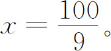
案例2是根据古希腊数学家芝诺（Zeno of Elea）提出的一个悖论问题改编的。原题是这样的：阿基里斯是古希腊神话中善跑的英雄，他和乌龟赛跑，他的速度为乌龟的10倍，开始时乌龟在他前面100米跑，他在后面追，芝诺认为他不可能追上乌龟。
芝诺给出的理由是：在竞赛中，当阿基里斯到达乌龟的出发点，即跑了100米时，乌龟已经又向前爬了10米；于是，阿基里斯必须继续追，而当他跑了乌龟爬的这10米时，乌龟已经又向前爬了1米；阿基里斯只能再跑那个1米。就这样，乌龟总能领先阿基里斯一个距离，不管这个距离有多小，但只要乌龟不停地奋力向前爬，阿基里斯就只能永远在乌龟的后面跑，永远也追不上乌龟！
类似阿基里斯追乌龟之类的追及问题，用无穷数列求和或用方程就能算出所需要的时间，前提是我们在这里必须有一个假定，那就是假定阿基里斯最终追上了乌龟，才可以列方程求出追上的时间。
但是芝诺悖论的实质在于要求我们证明为何阿基里斯能追上乌龟。芝诺悖论表达的思想是无穷个步骤是难以完成的，即否定了问题中时间这个无穷级数的极限是存在的。
我们假定阿基里斯的速度是10米/分，乌龟的速度是1米/分。按照芝诺悖论的逻辑，这
分可以无限细分，给我们一种好像永远也过不完的假象，但其实根本不是如此。阿基里斯赛跑的过程所用时间分别为：当阿基里斯跑完100米时，用时10分；跑完10米时，用时1分；跑完1米时，用时
分……所以阿基里斯赛跑的全程需要的时间总和为：
。这是一个无穷等比递缩数列的和，极限是存在的，利用公式可以求出和为 ，与案例2列方程解答的结果一致。上述解答过程告诉我们，实际上芝诺悖论陷入了一个时间的死胡同，相当于认为上述数列的和等于无穷大，即把这有限的
分时间分成了无数份，而且认为这无数份的时间过不完，认为阿基里斯和乌龟永远生活在这有限的无数份时间里，是只看到了无限，没有看到有限。打个比方，假设有1秒时间，我们先要过一半即
秒，再过一半的一半即
秒，再过一半的一半的一半即
秒，这样下去永远都过不完这1秒，因为无论时间再短也可无限细分。但其实我们真的就永远也过不完这1秒吗？显然不是，一眨眼的工夫1秒就过去了。尽管我们要过
，与案例2列方程解答的结果一致。上述解答过程告诉我们，实际上芝诺悖论陷入了一个时间的死胡同，相当于认为上述数列的和等于无穷大，即把这有限的
分时间分成了无数份，而且认为这无数份的时间过不完，认为阿基里斯和乌龟永远生活在这有限的无数份时间里，是只看到了无限，没有看到有限。打个比方，假设有1秒时间，我们先要过一半即
秒，再过一半的一半即
秒，再过一半的一半的一半即
秒，这样下去永远都过不完这1秒，因为无论时间再短也可无限细分。但其实我们真的就永远也过不完这1秒吗？显然不是，一眨眼的工夫1秒就过去了。尽管我们要过 秒，
秒， 秒，
秒……好像永远无穷无尽。但其实时间的运动是匀速的，这些时间越来越短，看上去是无限的，其实加起来只是1秒而已。所以说，芝诺悖论是不存在的。
秒，
秒……好像永远无穷无尽。但其实时间的运动是匀速的，这些时间越来越短，看上去是无限的，其实加起来只是1秒而已。所以说，芝诺悖论是不存在的。
极限思想在小学数学中有一定的应用，但只是渗透而已，并不让学生认识相关概念。所以要注意对教学要求的准确把握，不要增加学生的学习负担。
第八节 代换思想
一、对代换思想的认识
在数学式子中，有时把一个量用与它相等的另一个量去代替，进行变式，使表面复杂、怪异的式子简单化、模型化，找到解决问题的突破口，从而有利于解决问题，这就是代换的思想，也叫换元法。
等式的传递性也是一种代换，如果a
＝b
，b
＝c
，那么a
＝c
。这个思想是今后进一步学习数学的基础，甚至到了大学也会使用。“曹冲称象”的故事实际上就是利用了等量代换的思想，也是转化思想的体现，目的就是变换研究对象使复杂问题简单化，非标准问题标准化。等量代换思想因其可操作性强以及非凡的化简能力受到人们的重视，有利于提高解决问题的能力和培养思维能力。
二、代换思想的应用
代换思想在中小学数学的各个方面有广泛应用，在小学数学利用一元一次方程解决问题、几何计算和推理等方面有所应用。另外，利用代入消元法解二元一次方程组，实际上就是依据等量代换思想把二元一次方程组转化为一元一次方程。小学生认识了等量代换思想，可以直接用一元一次方程解决简单的关于二元一次方程组的问题，即问题中有两个相关联的量。
学生学习了用字母表示数，就可以用含有字母的式子表示数、数量关系及等式、方程。这些式子的计算和变换，都涉及等量代换方法的应用。
在几何图形的周长、面积、体积等计算中，也用到了用字母表示公式，代入数据求值，这也是等量代换。
三、代换思想的教学
等量代换是比较抽象的思想，对还处在以具体形象思维为主，逐步向抽象思维过渡的中低年级学生来说，有一定的困难。要根据这个年龄段学生的思维特点来组织教学才能让学生有所收获，让学生在观察思考、操作交流中知道能用一个与它相等的量去代换另一个量，初步体会等量代换的思想方法。在解决问题的过程中，教师应引导学生自主探究适合自己的解决问题方法，比如可以利用画图替代实物操作，也可以直接用一些符号表示。对于高年级学生来说，已经具备了一定的抽象思维能力，可以用字母等符号表示式子，并进行计算和推理。
案例1
李老师购买了5个足球和3个排球，共花了420元，并且2个足球的价钱等于3个排球的价钱。足球和排球的单价各是多少？
分析
此题的问题中有两个量，即足球和排球的单价，这两个量的关系是2个足球的价钱＝3个排球的价钱。根据等量代换思想，可用一元一次方程解决。设排球的单价是x
元，足球的单价是y
元，可列方程
5y
＋3x
＝420，2y
＝3x
，
所以
5y
＋2y
＝420，
即
y
＝60。
x
＝2y
÷3＝2×60÷3＝40。
所以足球的单价是60元，排球的单价是40元。
案例2
如图3-18，已知三角形ABC
，D
是底边BC
的中点，即BD
＝DC
。
（1）在三角形ABC
、三角形ABD
和三角形ADC
中，BC
、BD
和DC
三条边上的高之间有什么关系？
（2）你能说明三角形ABD
的面积等于三角形ADC
的面积吗？
分析
（1）根据三角形高的概念，BC
、BD
和DC
三条边上的高，都是从A
点到3个对边BC
、BD
、DC
之间所作的垂线段，实际上是同一条线段，他们的高相等。（2）设第（1）题中的高为h
，那么三角形ABD
的面积
，三角形ADC
的面积
。根据已知条件BD
＝DC
，可得三角形ABD
的面积＝三角形ADC
的面积。
————————————————————
(1)
林崇德．小学儿童数概念与运算能力发展的研究．心理学报，1981（3）．
(2)
王瑾．小学数学课程中归纳推理的理论与实践研究．东北师范大学博士学位论文，2011年3月．
(3)
梁秋莲．小学数学教学探索．北京：人民教育出版社，2007年，第517页．
(4)
王骧业，孙永龄．8～12岁儿童类比推理研究．青海师范学院学报（哲学社会科学版），1981（4）．
(5)
李丹等．儿童演绎推理的特点．华东师范大学学报，1964（1）．
(6)
林崇德.小学儿童数概念与运算能力发展的研究.心理学报，1981（3）.
(7)
刘加霞.“数形结合”思想及其在教学中的渗透（上）.小学教学（数学版），2008（4）.
(8)
曹培英．学科知识是提升教学水平不可或缺的基础.小学教学（数学版），2013（10）．